INDEX OF CHAPTERS.
Preface. Chapter I. Chapter II. Chapter III. Chapter IV. Chapter V. Chapter VI. Chapter VII. Chapter VIII. Appendix.
Ten Centuries Ago
The Dawn of Record
A.D. 1500
A.D. 1600
A.D. 1700
A.D. 1800—1850
Armorial Bearings, Tombstones and Memorials
The Towers and Homes of the Family
Pedigrees, Abstracts from Parish Records, &c.
8
25
58
94
115
129
140
151
The nature of the work does not lend itself to a detail index, which would consist largely of lists of Christian names, and therefore no such index is given.
The Spirit of Tweed.. .. .. .. .. .. .. Frontispiece.
The River Tweed above Drummelzier .. .. .. .. .. .. 2
The Ruins of Drummelzier Castle.. .. .. .. .. .. .. 2
Drummelzier Castle in 1791 (from an old engraving) .. .. .. .. 6
Widmore Lodge, Widmore, Kent .. .. .. .. .. .. .. 6
Facsimile of Grant by Robert (Bruce) King of Scots .. .. .. 8
Facsimile of Charter by William Fraser .. .. .. .. .. 10
„ „ Confirmation by Robert (Bruce) King of Scots .. .. 12
„ ,, Confirmation by David (Bruce) King of Scots .. .. 14
„ „ Letter of Maintenance and Defence by James King of Scots 16
„ „ Gift by Mary Queen of Scots .. .. .. .. .. 38
„ „ Dispensation by King James VI. .. .. .. .. 42
„ „ Precept by King James VI. .. .. .. .. .. 44
The Ancient Coat of Arms at Oliver .. .. .. .. .. .. 66
Neidpath Castle .. .. .. .. .. .. .. .. .. 66
The Site of Fruid Castle .. .. .. .. .. .. .. .. 80
Dreva .. .. .. .. .. .. .. .. .. .. .. 80
Kingledoors .. .. .. .. .. .. .. .. .. .. 84
The Ruins of Wrae Castle .. .. .. .. .. .. .. .. 84
Tweedsmuir Church .. .. .. .. .. .. .. .. .. 88
Drummelzier Church.. .. .. .. .. .. .. .. .. 88
Hall Manor .. .. .... .. .. .. .. .. .. 94
The Valley of Manor .. .. .. .. .. .. .. .. 94
The House of Quarter .. .. .. .. .. .. .. .. 98
The Old Farmhouse at Rawlinson .. . . .. .. .. .. 100
The Snuff Box of Prince Charles Edward . . .. .. .. .. 100
Armorial Bearings .. .. .. .. .. .. .. .. .. 128
Facsimile of Arms of Tvveedie from the Lindsay Register, A.D. 1542 •• 13°
„ ,, Arms of Forbes „ „ „ .. 130
The Ancient Coat of Arms at the Church of Drummelzier .. .. .. 132
The Ancient Coat of Arms at Quarter .. .. .. .. .. .. 132
The Oliver Stones at Tweedsmuir Church .. .. .. .. .. 134
The Tweedie Stone in the Yard of St. Andrew's Church, Peebles .. .. 134
The Brasses in the Church of Stock Harvard-cum-Ramsden Bellhouse in Essex 136
[OVER
VI.
Illustrations — continued.
The Monument in Sampford Parva Church, Essex Tablet in Church of St. Mary Castlegate, York
The Ruins of Tinnies Castle The Site of Tinnies Castle
The Site of Oliver Castle
Tweedsmuir with Oliver House in the distance
Oliver House Rachan
Rawlinson House
The Hoo, Kempston, Bedfordshire
Elmshurst, Chatham, Northumberland County, New Brunswick Cloonamahon, co. Sligo, Ireland
PAGE. 138 138
I40 I4O
142 142
144 144
I46 I46
148 148
PREFACE.
"Did I fear a great multitude, or did the contempt of families terrify me. Oh ... that mine adversary had written a book."
THIS history, which has been nearly twenty years in making, was originally intended solely for the members of the family, but as time went on the hope grew that it might also be of interest to others as a picture of the inhabitants of the Scottish Lowlands, whose manners and customs formed so distinctive a feature of the country and who played such a prominent part in its story.
As it is actually written, however, for the family only, I have not hesitated to make frequent extracts from other authors, notably from the late Professor John Veitch, with whom I had a pleasant correspondence concerning this work. I feel that the highest tribute I can pay to him, the greatest authority on Scottish Border history, is to quote from him. He, himself, kindly said that my name and the ancient relations between our two families were more than sufficient apology, and I have, as well, since received kind permission to the same effect from his publishers, Messrs. Blackwood & Sons, of Edinburgh. I also gratefully acknowledge the kindness of Mr. R. M. Hay and Mr. F. S. Hay in allowing access to the ancient documents in the Charter room at Duns Castle, and for enabling photographs to be made of them ; and I have as well to express my thanks to the many other persons who have assisted me at the cost of much time and trouble to themselves.
For the sake of convenience I have adopted the general spelling of the name as Tweedie, as being the more usual, at all events in Scotland ; it is, however, found in the ancient documents in every conceivable form, Tuedy,
viii. Preface.
Twyddie, Tweedy, Tweedie, Twedy, Twedie, Tweidie, and many other ways, and except by reason of custom and usage in any particular branch, no one form is more correct or authentic than another. Whenever, however, this custom and usage exists, I have adhered to it.
In spite of the care I have spent on the work, I am only too well aware of its many imperfections, for which I ask the indulgence of the reader. Perhaps, some day, when the index and printing of the Public Records of Scotland are completed, some one may be found to complete this story.
I would add that the pedigrees in the Appendix are not given in any pride of descent, but to place on record the information that has developed itself in the course of the work. Genealogical details are, perhaps, of more than ordinary interest in this case, because not only is the surname borne by a very limited number of people, but it is of such a purely local character that it always denotes, if not actual kinship, at least a definite connection with the district of Tweeddale, which is, beyond all doubt, the source whence all Tweedies come.
MICHAEL FORBES TWEEDIE.
THE HISTORY
OF THE
TWEEDIE, or TWEEDY, FAMILY.
CHAPTER I. TEN CENTURIES AGO.
WHENCE they came, who they were, and what manner of men they may have been, is the natural thought of every man about his Ancestors ; it is but a matter of sentiment, and of less importance than what manner of men we are, and whither we are going, yet it is doubtful which question has received, and does receive, the more consideration.
We venture to think that pride of race and family is not altogether undesirable, for, as Tennyson tells us, " Ev'n the homely farm can teach us, there is something in descent." Ever since the Creation, the " family " has been the unit of all good government, of all order, and all organization, and its prosperity the keynote of all success ; the knowledge that he has a good family record to maintain, and a name to uphold, has often done much to sustain a man in the hour of need ; and it is indeed in this knowledge that the practical value of a recorded history of a family lies, quite apart from its antiquarian interest.
It was a feeling of this kind that first suggested the idea of collecting the
records of the Tweedies. The search for the earliest traces of the family takes
one back into the dark distance of the ages where all beginnings would be lost
for ever but for the indistinct glimmerings of tradition which have reached
us ; but more fortunate than many families, the Tweedies can quote from
the Master of all Scottish tradition the legend of their origin, which is
related in the preface to "The Betrothed," as follows:—"Scottish tradition ttbe JSctrotbeO
ascribes to the Clan of Tweedie, a family once stout and warlike, a descent g co tt (preface).
which would not have misbecome a hero of antiquity. A baron, somewhat
elderly, we may suppose, had wedded a buxom young lady, and some months [ as t flMnetrcl.
after their union he went to the Crusades and left her to ply the distaffawen&fcCanto (.
r J 5tati3a jil.
alone in his old tower, among the mountains of the County of Peebles, mote Ifc. near the source of the Tweed. He returned after seven or eight years— no uncommon time for a pilgrimage to Palestine—and found his family had not been lonely in his absence ; the lady having been cheered by the
Ibomer's
©&B66CB
JSooft if.
arrival of a stranger (of whose approach she could give the best account of any one) who hung on her skirts and called her mammy, and who was just such as the baron would have longed to call his son, could he have made his age correspond, according to the doctrine of civilians, with his own departure for Palestine. He applied to his wife, therefore, for the solution of this dilemma. The lady, after many floods of tears which she had reserved for the occasion, informed the honest gentleman, that walking one day alone by the banks of the infant river, a human form arose from a deep eddy still known and termed Tweed pool, who deigned to inform her that he was the tutelar genius of the stream, and, bongre, malgre, became the father of the sturdy fellow, whose appearance had so much surprised her husband. This story, however suitable to Pagan times, would have met with full credence from few of the baron's contemporaries, had not the wife been young and beautiful, the husband old and in his dotage. Her family (the Frasers, it is believed) were powerful and warlike, and the baron had had fighting enough in the holy wars. The result was, that he believed or seemed to believe the tale, and remained contented with the child with whom his wife and the Tweed had generously presented him. The only circumstance which preserved the memory of the incident, was that the youth retained the name of Tweed or Tweedie. The baron, meanwhile, could not, as the old Scotch songs says, ' keep the cradle rowing,' and the Tweed apparently thought one natural son was family enough for a decent Presbyterian lover. So little gall had the baron in his composition, that having bred up the young Tweed as his heir while he lived, he left him in that capacity when he died, and the son of the river-god founded the family of Drummelzier and others, from whom have flowed, in the phrase of the Ettrick Shepherd, " Many a brave fellow and many a bauld feat."
The legend of a river becoming the father of a child is a very ancient one—quite classical in fact,—compare, for instance, Homer's account of Tyro, the daughter of Salmoneus, King of Elis, and the birth of the twin Kings, Pelias and Neleus, her sons:—
" For fair Enipeus as from fruitful urns, He pours his watery stores the Virgin burns; Smooth flows the gentle stream with wanton pride, And in soft masses rolls a silver tide. As on his banks the maid enamoured roves, The monarch of the deep beholds and loves; In her Enipeus' form and borrowed charms, The amorous god descends into her arms; "
A pool in Tweed, near Drummelzier, is still called the " Devil's Pool," and tradition says that the family name was originally Tweedeil or
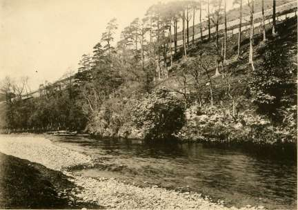
FONS ATQUE ORIGO FAMILY.
The River Tweed above Drummelzier.
"The Devil's Pool."
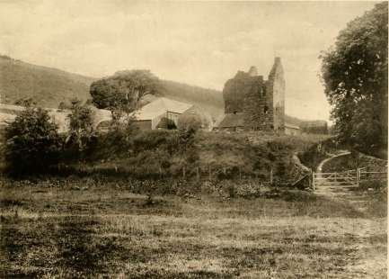
THE RUINS OF DRUMMELZIER CASTLE.
Tweed devil, and thus subsequently Tweedie ; this is, however, of course, mere tradition and nothing more, and has no real basis of truth. The first recorded form of the name is de Tueda, as of a man living in the reign of Alexander II., but in whatever shape it may be found, there seems no doubt that the origin is the same, although, after the manner of the times, it is spelt in many different ways, the same individual's name being sometimes differently rendered even in the same document; Tuedy, Tuedi, Tweedy, Twedy, Tueday, Tuedie, Tweedie, Twidy, Twedie, Tweidie, Tueidie, and even Twyddie, being a few examples in point. It was not until comparatively modern times that any uniformity was observed, but for the sake of convenience it is proposed to keep to one spelling of the name, except when an actual quotation is given, or reference made to any branch of the family which has definitely adopted another form of the name, and no one form is more correct or authentic than another. All of the name, no doubt, sprung either direct from the common ancestor who first assumed the surname from the river on which he dwelt, or from one of his followers; for it was not unusual in those wild lawless days for men to adopt the surname of the patron under whose protection they gathered, and to whom they were united by the common danger in bonds as strong as actual relationship, even if such did not already exist between them.
It is however, with the days before feudal times, although subsequent to traditionary ages, that we propose first to deal, and we cannot find a better guide than Professor Veitch, the great authority on ibistocv? anO
the district of the upper reaches of the river Tweed, for it is in Drummelzier,
Hopkelloch, Kilbucho, and Oliver, and the adjoining country, that we 2 vole., bp.
find the family resident in the earliest days of its recorded history, when C660r e c ''
surnames first began to come into use.
Professor Veitch tells us that " this district, the land of foray and feud, of hostile inroad from England, and of aggression in return, has been the heart whence strong bold action, the gradual growth of history, tradition, legend, the continuous flow of song, ballad and music have moved Iblstocg ano the feelings and moulded the imagination not only of the people of the gcotttib JBorOcr district but, of the whole land of Scotland." vol. (.p.3.
The nature of the Country has probably changed but little, except perhaps that it was in early times clothed with birch and woods of a like nature. The Celtic inhabitants were found by the Romans in their forests, and many of the names throughout all the Border Country are indicative ©rcen, "/iBahfng of felling and clearing. The land was a forest wherever soil and elevation ° " 9 an ' permitted wood to grow, all part, no doubt, of the great and ancient forest of Caledon, Coit Celidon, and it is possible that the name Gadeni or Cadeni, borne by the ancient inhabitants of at least a portion of the Border
Zbe JSallab of tbe Outlaw, Murray.
Scotorum
Ibiatorfa vli. 500
(eo. Sale).
Ibistorg ano Ipoetrg of tbe Scottleb JBorDer vol. i. p. 31.
IbtstoiB and Ipoctrg of tbe Scottish forcer.
district, meant dwellers in the wood. No doubt the hill-tops were as bare in the old times as now, but in the valleys and glens grew the birch, sallow thorn, mountain ash, and alder, forming a dense underwood with the Scotch fir, ash, and oak, juniper, bracken, fern, and common heather on the higher slopes, giving a fair picture of the Country in the times when Cymri and Angles held the land. Game of all kind was abundant, bird and beast of chase, red deer and roe deer,—even as late as the days of James V. and Mary, and for many years afterwards.
All down the stretch of Tweed, "the flood of Tweed," as it is called in the Border Laws, stands out the line of the now ruinous old castles and peels, of which many were held by Tweedies, such as Oliver Castle in the upper reaches, Wrae Castle, Drummelzier Castle, and Tinnies Castle; they extend over a hundred miles of country, memorials of the incidents and struggles of the Border, and of its old rough life.
It is beyond the scope of our present work to enquire who were the people that in the past lived in this district, or to what races they belonged, our interest only begins when we first find signs that the dwellers in these ancient towers and castles were possibly the ancestors of the family which subsequently held the district for many years.
The names of these castles and peels, to say nothing of the hills and streams on which they stand, point clearly to the owners having originally been that Cymric people who occupied the greater portion of the Lowlands for several centuries after the departure of the Romans from Britain, and who made such a gallant struggle against Pict and Angle and Scot to maintain their footing in those wilds. These forts were their last places of retreat in that district, and their last strongholds there were the Border Hills of Scotland, ere they were finally subdued, and emigrated from the district or were merged in the Kingdom of Scotland. Curiously enough the information obtained from Ptolemy and other historians confirms the supposition that the inhabitants of the valleys of the Tweed and the Clyde, at the dawn of history, were identical with those of Wales and Cornwall.
Coming to comparatively modern times, it is a matter of history that after the successes of William the Conqueror, or " Conquestor "—as is written on his tomb in Caen—many of the original Saxon landowners emigrated northwards from England and actually reached Scotland. The Conquest, as it is called, really took seven years to complete in England, those who resisted being treated as rebels, and their lands being forfeited.
Many persons of importance fled northwards to Scotland, and there was in that direction a constant stream of Saxon emigration, which appears to have continued even down to the time of David I , when to this Saxon current was added a flow of French and Normans. We find from the early charters of David I., his brothers, and the Alexanders, that the Celtic names
had gradually disappeared from places of importance in the Lowlands of Scotland, and the whole language ultimately formed and spoken there came to be a fusion of Angle, Danish, and Saxon.
At the Battle of the Standard, in 1138, the " Tevidalenses," that is, the people of Teviotdale and Tweeddale, formed with the Cumbrenses, the second division of the Scots, and the latest reference we have to the dwellers in the district as a distinct race, is in the reign of Malcom IV., about 1165. After that they seem to have been wholly merged in the general population and the language known as Angle, or the broad vowelled branch of the Saxon, became the spoken language of the country.
This confusion of tongues points to a large immigration from "Ibtstore ano Northumbria and probably other parts of England, and the charter lists of scottlab JBorocr the twelfth and thirteenth centuries show a great preponderance of Anglo-vo1 *• Saxon and Anglo-Norman names of persons on the Tweed. No doubt many good Anglo-Saxon and Anglo-Norman families settled in the Lowlands about the time of David I., who encouraged them, and had a bodyguard of " Milites Angli et Franci," or Anglian and Norman Knights, at the Battle of the Standard, it was to these " Milites Angli et Franci" especially that f "I 5 !" 11 * £ bron-he gave estates on Tweedside, and it is here at this time, and as barons and landowners that we find the first historical record of the Family of Tweedie. The men to whom David gave estates on Tweedside, and their successors, soon held nearly all the lands along the Tweed and its tributaries. Each man built himself a fortalice, a mill, and a brewhouse, and 3imcs JEarlg surrounded himself with his own followers. Thus the old Cymric stock in ibigtorg, 10. the south, and in a measure the Gaelic race in the north, were superseded, on the Tweed at all events, by men of Norman, Flemish, or Saxon blood, and probably from this stock sprang the ancestors of those who now bear the surname of Tweedie, or Tweedy, or any of the kindred renderings of the name. The word Tweed is the Cymric Tywi, from the root Twy, and Ibtstorg ano probably means " that which limits, checks or bounds," Twyad in Welsh Scottish ffioroer meaning "a hemming in" Robertson gives the Gaelic, Tuath-aid " the river p '
flowing to the north side," but the oldest spelling of the name favours the other derivation, Bede writes Tuid and in 1185 it is written Tuede, and the family surname no doubt arose from the original holders describing themselves, as is evident from the records, as John, or Thomas, as the case might be, " de Tueda," John of the Tweed, then John Tueda, or Tuede, and so Tweedie or Twedy.
At the first it is difficult to even guess at the personalities that these far away records disclose, for surnames were yet to be adopted, and a man was only known either by the lands he held, or as the son of his father, or by some such indefinite description, but in some cases even this still points to certain individuals as ancestors.
a.D. 1115—1124. Between the years 1115 and 1124, an enquiry was held regarding
the lands and churches belonging to the Episcopal See of Glasgow, the
proceedings of which are recorded in a document still existing, known as
l?eg. Epts. " Inquisitio per David princepem Cumbrensem de terris Ecclesie Glas-
©laagow 1, Ho. 1. . ... r „ ^T. , , . . .
quensi pertinentibus facta. 1 he supposed date of this document is n 16;
by it the five oldest and wisest men of all Cumbria record on oath the
possessions of the Church, and they deal particularly with the district in
which the family of Tweedie is found. Among the names of these five
is Gillielmus, Alius Boed, which bears a strong resemblance, making due
allowance for the phonetic spelling of the age, to Gylis the son of Buht,
who is described as of Drummelzier in another document of somewhat
later date to which we will presently refer. Drummelzier being a
possession which was inherited by the Tweedies through marriage with
an heiress, we may fairly conjecture that Boed or Buht, and Gillielmus or
Gylis, were lineal ancestors of the Tweedies living about the year 1066,
the time of the Norman Conquest of England.
B.E>. 1153—1165. In the reign of Malcolm IV., about the years 1153-1165, we find the
King addressing the people of the land as " Francis, Anglicis, Scotis, et
Galweiensibus," and again as " Francis, et Anglicis, Scotis, Walensibus,
Iblstorfee of Gauelensibus." The witnesses to these documents are the leading men of
jforoun's'cbron. the period, amongst whom, with other names evidently hailing from the
Jnt. lii. Uli. district of Tweeddale, appears the name of " Olifard," surely the name of
Obuiaowl' t ^ ie t ' ien P ossessor °f Oliver, and if so, with very little doubt an ancestor
mo. 12. of the long line of the family that have held Oliver ever since, of whom
Tweedie-Stodart is the present representative.
a.©. 1175—1199. Oliver, the son of Kylvert, possibly the same person as Olifard,
appears among the followers of the great Earls of March between
the years 1175 and 1199. He built a fortress on his desmene in
Tweeddale which was known by his name as early as the year
©rigines 1200; he married a lady named Beatrice who probably brought him
Scotlae'voU lands on the Tyne in East Lothian, and, according to tradition in the
p. 205. family, it was through her also that he acquired great estates on the
Tweed.
B.D.1200. About the year 1200, while William the Lion was king, we have a
very curious and interesting document which has preserved the names of
many persons and places of that period in the Valley of the Tweed. This
IRcg. Epis. is trie Divise de Stobo, or the Marches of Stobo, preserved in the Chartulary
©lasgow 1-89, 0 f t ^ e Bishopric of Glasgow, which dealt with the very heart of the district
mo. 104. F , , , • ,
©rffltnes wIt h which we are concerned. Among the witnesses to this document we
parocbtalcs nn( j Patricius de Hopkeliov, Gylis filius Buht aput Drumedler (to whom
p. 199. we have already referred), and Adam et Cosouold, filii Muryn aput Castrum
Oliveri. Hopkelloch or Hopkailzie, now Kailzie, was one of the earliest
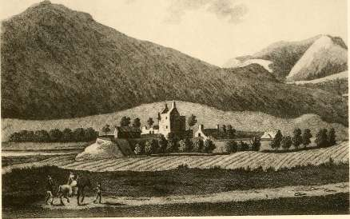
DRUMMELZIER CASTLE IN 1791 (From an Old Engraving).
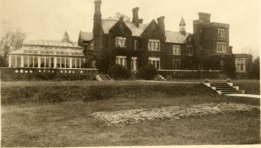
WIDMORE LODGE, WIDMORE, KENT.
possessions of the Tweedie family, and Patrick was a name in constant use in the family for years afterwards.
In the year 1260 we hear of " Erchebald of Hopkelioch " as a witness a.®. 126O. to a deed regarding the lands of Windilawes in Eddleston parish, while * a '"'f^ l ^" &ar the names of "Archibald and Clement of Hopkeliov" appear as jurors at ^.5). 1262. Peebles on the day of St. Leonard in the year 1262 regarding the moss Peebles Cbarters at Walthamshope.
In the far-away figures of Buht and his son Gyllis, of Kyi vert and his son Olifard, Oliver, Patrick, and of Muryn and his sons Adam and Cosouold, the Tweedies of to-day may thus well recognise kinsmen. This, however, is but an idea, and having summoned up a vision of who their forefathers may have been, and whence it is possible that they came, let us pass on to the more certain facts disclosed by the records, and see what manner of men the earliest-known ancestors of the family really were.
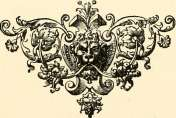
I
CHAPTER II.
THE DAWN OF RECORD.
T is a long step from legend and inference to history, but it is one which, when once made, lands us upon trustworthy ground where the searcher feels himself almost in personal touch with the past.
anquigtt y^g fj rS £ man wnom we fl nc j mentioned in the records by the surname
Generates. J
which the family has borne through so many ages is one Johannes de
?°ftp b 2l0 S0ftbat iueda > as ne described himself in the reign of Alexander II. He afterwards had a Charter from Alexander III. granted him under the name of John de a.©. 1214—1249. Xuedy, and this would have been about the years 1214-1249. It is on record that he was the owner of lands on the river Tweed from which the family took their name, and that even then the family connections and possessions were widespread and powerful.
The next step brings us to documents which put us at the present day into direct view of the dawn of record.
In the Charter room at Duns Castle are some ancient writs and charters, so ancient indeed that some time since their mere interest as such prompted an antiquarian, searching there for other purposes, to make a note of them. In subsequent days chance led him to hear of this present work, and realising that these ancient documents were of first importance to it he gave information which led to their careful consideration. They turned out to be the original writs and charters of the family of Tweedie dating from the year 1314 to the year 1633.
Their presence at Duns Castle is accounted for by the fact that in the year 1633, Drummelzier Castle, up till then the chief seat of the Tweedies, passed into the possession of Lord Hay of Yester who made it over to his younger son. His descendants subsequently parted with the property, but retained, as of no value, the old charters and writs which had gone with Drummelzier when it left the hands of the Tweedies; and they have lain in the Charter room ever since at Duns Castle, by the kind leave of whose owner inspection has been permitted of these interesting old records.
With these writs and charters and the documents on the public registers, begins the recorded and accurate history of the family, upon which we will enter without further comment.
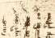
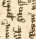
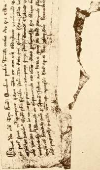
The earliest of these charters and writs of the family refers to a.©. 1296.
Fynley de Twydyn, "del Comte de Lanarke" (of the County of Lanark), an undoubted ancestor, who did homage to Edward I. of England on his assuming ffamtlg.
sovereign rights over Scotland. This Fynley or Fynlaw had a son named 5 a , s " 1an 1Ro11
& & . -,. ©tigincs
Roger, who married one of the co-heiresses (the eldest daughter), of Sir parocbiales 1,
William Fraser of Oliver Castle, son of Sir Simon Fraser, so celebrated in p *
the days of Bruce, and it was through her the estates of Drummelzier
and Oliver came into possession of the family of Tweedie. This marriage anoerson's 1btst.
may have taken place at any time between 1296 and 1329, but probably
during the reign of David II. Roger was evidently a person of some
importance, and apparently even then used the arms which the family
of Tweedie carry at the present day, as we learn from subsequent records
that he bore on his shield: argent a saltire engrailed gules a chief azure;
along with which he displayed the arms of Fraser in right of his wife,
the heiress, but the Fraser Quartering was afterwards discontinued
some time between the years 1500 and 1600. Mary, the other co-heiress
of Sir William Fraser, married, in 1308, Sir Gilbert Hay of
Lockerward.
Among the most ancient possessions of the family was Hopcailzie, JTwceo ano otbec and on the 28th August, 1296, "William le Hopkelioghe" is found as one of the tenants of the King in the County of Peebles, but whether he was actually an ancestor or not is unknown ; he swore fealty to Edward I. at Berwick-upon-Tweed. His seal is described as " Vesica shape Lion passant ^aht's to Sinister" and lettered " Willelmi de Hopcailov." He is also on pp. 202—533. record as holding the lands of Westerhopkeliov and Esterhopkeliov of the ©0. pp. 424, 42S. King, and a little later on he obtains leave from the King to lease certain _ m ,_,_ portions of these lands, the consideration or rent for which is not uninteresting: "12 Chalders of provender, a Suitor at the Court of Peebles, 2—130 . "a 3rd of a Knights service in the King's Scottish Army and a Man for j 3 ' 0 5. "8 days to keep the road through Minehe Moor free from robbers."
In a humble way, illustrative of the times, we find among the garrison Cbronic. tibem.
vol. ill. 40S. of the Castle of Bothville one Hugo de Twydyn, an archer, possibly one of a.j>, 1*311, '
Fynlaw's men, at 2d. a day, from 8th July, 1311.
In the year 1314, Robert the Bruce, King of Scots, made a grant to B.2>. 1314.
his beloved and faithful Roger (who we have already mentioned), the son
of Fynlaw de Twydyn, of all the lands which belonged to John of Seton,
within the tenement of Cornokis, in recompense of the damage sustained by Original (Ibarras
Roger in consequence of John of Seaton and his brother having abducted g nm ^
the " Equitinium " of Roger. The original of this document is still in
existence, and is dated at Ayr, 18th December, 8th year of the reign of
Robert the Bruce, and it seems probable that Roger must have fought for
the Bruce, and John of Seton on the other, and losing side.
What the "Equitinium" was that was stolen is a matter of some doubt, as there is no such word to be found in classical Latin, but it may be a mistake for equitium, meaning a stud of horses, a valuable appendage of the landowner of those days. Can John have descended upon Roger, and got clear away with his horses ? And if so, was that all he took ? We think, knowing the spirit of the times, it did not probably stop there, and a curious picture is conjured up of a sudden attack, stampeded cattle and horses, and blows and cries in the darkness of a certain night; in the year
I3I4-a.®. 1320. In the year 1320, this same Roger, the son of Fynlaw of Twydyn,
acquired the house, brewhouse, yard, and lands in Drummelzier, which
©riginal Charters William, the son of Utting, had held formerly, and for which Roger was to oftbetfwecoie , f .,. . , ,. • 1 r
jFamilg. P a Y y ear ly a P air 01 gut spurs or sixpence sterling, a curious example of
the value of property, and in 1321 we find Roger also acquiring property
in Kilbucho.
a.©. 1326. In the year 1326, and possibly on the occasion of the marriage of his
daughter to Roger, Sir William Fraser granted to Roger the Barony of
OriginalCbartere Drummelzier, for "a pair of guilt spurs or 12 pennies if asked," which was of tbc ftwce&le ~ , , T ,. „, T / 1 t-> \ /-1 1 it
ffamtPg. confirmed by King Robert 1. (the bruce), at ulasgow, on the 12th June in
©riglnes the same year, and henceforward the Tweedies became Barons of
iParocbialcs ~ . .
vol. I. p. 204. Drummelzier.
This marriage of the daughter of a local family to a stranger probably gave rise to the tradition of the mythological origin of the Family of Tweedie. The common people, whose ignorance usually gives birth to all legends, found a stranger among them whose presence and power they could not account for, and whose origin they accordingly put down to supernatural causes; a tradition that was not likely to lose in strength for the want of a little additional colouring as the legend passed down from mouth to mouth through successive generations of a credulous and superstitious peasantry.
In much the same way local traditions claim for the district other supernatural characters, such as Jack the Giant Killer, King Arthur, Iblatorg and Thomas the Rhymer, and the Wizard Merlin. Thus a legend prevalent in
Scottleb JBorocr. the parish of Tweedsmuir relates how a person of diminutive stature, called Little-John, from behind a boulder discharged an arrow at a freebooter of gigantic proportions who, though standing on the opposite side of the Tweed, could not elude the deadly stroke, and was buried on the spot where he fell. This incident is considered the origin of the well known story of Jack the Giant Killer, and if any there be who disbelieve it, all that can be said is, that there is the legend, that a tumulus in which human remains
accoimf atlBtlCal nave been found is sti11 P oin ted out as the "Giant's grave," and that if any further evidence be wanted, to this very day the boulder can be seen
-\ 3*H
Tgmm —-*-"■ T Jt ..
-1 hi rl M * ^, s ' J-t^H a? i 1 1 4 - .4.1 4 ? J • ^ f ir te -
1. W ■;
l-t'J-* * 1? F" * I f '1 * ^ J * is -< iv's-i
■ TMfrH
^ U » ^S JIT '«, <_ i
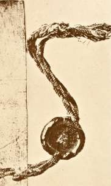
«£=
II I I .
it' ^^ : y - J
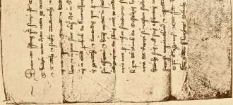
in Tweedsmuir, close by the road leading from the Church to Menzion
House.
As for Merlin the Wild, his grave is pointed out at Drummelzier
beneath an ancient thorn tree, close to the junction of the Powsail with the
Tweed, and we learn from Fordun that this personage resided at Drum- fforoun'8
1 • , i , t , j r -f jj i a • • u- Scottisb Cbron.
melzier, and roamed through the woods of 1 weeddale, and it is in his ^ ^ a> 3lt
name that the Scottish prophecies are issued. The whole district is pervaded with the fame of Thomas of Erceldoune, or Thomas the Rhymour ot Erceldoune, or simply Thomas the Rhymour, and it is the best known name with which a definite work is associated. The historical facts abou«t this soothsayer are but few, and they are mostly given by Sir Walter Scott in his notice of him in the Minstrelsy. He lived some time in the thirteenth century, in the hamlet of Erceldoune, now Earlston, and even in his lifetime he was regarded as a seer and foreteller of the future, and as having a mysterious connection with the land of Faerii. The story of his end is, that he disappeared from his grey tower in Erceldoune one day in response to a supernatural call and was never seen again.
About King Arthur, his personality and exploits, so great a conflict ^jj£** ( g| 0f has raged that we refrain from entering into it further than to say Berlin, that local legends claim the Tweeddale district to have been the scene ofScoJtflSinatreteB his life, his battles, and his death. " A mystery to the world," says the old Bard, " is the grave of Arthur" ; and a mystery to the world is the story of his life, as far as we know it now. But for a masterly treatment of the Arthurian Legend we would refer our readers to the fifth chapter of the first volume of Professor Veitch's " History and Poetry of the Scottish Border," and advise them to see for themselves the wonderful picture of the past conjured up by the learned Professor before making up their minds on the subject.
In i-?2Q, Roarer, the son of Fynlaw of Twydyn, acquired the lands ©rifltn. tParocb.
J t_ T7- r> u T VOl. f. p. 520.
of Wester Hopkailzie under another charter granted by King Robert 1., © rifllnaI cbarterg
and in mi the lands of Glenbruk, now Glenbreck, in Tweedsmuir, from or tbc Gweeofe
Sir Hugh de Gurclay, which is the last mention made of Roger to be
found in the records.
On the 26th November, 1331, we find a complaint lodged before 2t.D. 1331.
the Parliament at Scone by the Lord of Skirling against William ^Sftamcnt Scot.
Tweedie, in that the latter had not performed " Sectas et Servitia." rot. t. p. 512.
This William was the son of Roger, and the grandson of Fynlaw Jjjjjjjj^jj
de Twyndyn, and in the year 1351 we learn that Tweedie of 11*0.28.
„ , . , , ,, , TT .„. v • , 1 r .1 j u t f ©rigtnal Cbarters
Drummelzier (probably William), married the fourth daughter ot of tbc ttweeote
Sir James Douglas and Lady Agnes Dunbar. This Lady Agnes Dunbar | a " 11l ^ 5l
was the celebrated Black Agnes of Sir Walter Scott's " Tales of a 5)' 0U gi ag peerage
Grandfather," Wot. tt. p. 267.
Gales of a » she kept a stir in Tower and Trench,
j, j24 That brawling, boisterous Scottish Wench,
Came I early came I late,
I found Agnes at the Gate,"
sang the minstrels in their ballads about the siege of the Castle of Dunbar in 1333, and her exploits in its defence. With this near relationship between them and the leading characters of the day, we may be sure that the Tweedies took an active part in all the long and terrible wars that then raged, when there was nothing but fighting, the making of prisoners, battles, and the wounding and slaying of men innumerable, when, as Sir Walter says, "there was no finding any refuge or protection but in the strongest arm and the longest sword ; when there was no raising of crops, no religious devotion, and all the laws of humanity and charity were transgressed without scruple ; when whole families were found starved to death, even cannibalism being resorted to, and the whole country reduced to a most disastrous state." a,2>. 1355. The Douglas family about this time appear to have been allies of the
Tweedies, and to have exerted themselves in their interests, for on the 8th December, 1355, letters of regress (or pardon) were issued by Robert, the Steward of Scotland, Lieutenant of the King, in favour of James of Tweedie, because the Lord of Douglas had received him to the faith and peace of the King. This was Tweedie of Drummelzier, and he must have ©rtginal Charters been in trouble of some sort. These letters were confirmed by David II., Gweeote. King of Scots, at Perth, on the 4th July, 1360, five years afterwards. It
•Robertson's will be remembered that David II. had been taken prisoner by the
mo aC *| r0 P ' 59 ' English at the battle of Neville's Cross, near Durham, on the 17th October, 1346, and carried to London, nor did he regain his freedom for eleven years, which was possibly the reason of the delay in confirming this charter. In the meanwhile, William Douglas had shown great courage and skill in regaining the Borders for the Kingdom of Scotland, and it was no doubt in respect of some arrangement arrived at with James of Tweedie in regard to this, that this charter was granted, probably to secure Tweedie's co-operation in the fighting which resulted in the retreat of Edward III. from Scotland and the liberation of David II.
a.©. 1362. . , ,.. , , x , -n ,• J • .
"Robertson's About this time also (1362), the 1 weedies were connected with
no.t9. ' the powerful family of Cockburns, for Sir Alexander Cockburn
tftatluTp! 39. married Margaret, a cousin of this James Tweedie of Drummelzier,
Seal 1*0* 26 anc * s ' ie ^d an annual (or annuity), charged upon his lands of
S&ma. ' H °P kelloch -
jEjcbequerUolls On the 27th March, 1373, the name of "Walter de Tuedy," "locum
B.i>. 1388. tenens Vicecomitis de Peblis" appears in proceedings recorded in the
wUtf.p""^?"!. Exchequer Rolls, and in the same records, under date the 12th June, 1388,
r-nr-t--rpr ■
-. s 5 1 %% 1 ■rJ 1 p*
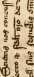
!■ Jtf *f 3 |%;
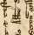
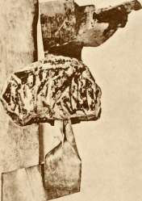
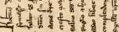
^■i**;
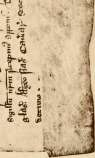
2 ffl J2 O
3. £ i
o 3 I <
8 « »
— C M
.1^2
- «■*
o «-. fe 2
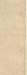
S & rt U o -o
.. 3 *
• -S "5
Z Jk
— *-" a)
g &&
3 rf ■-
£3 o
B 3
o -a
X c
5 "O
H o 1- S
be -2
a s »
Zf»< O i.-
we find mention of a '' William de Tuedi" in matters connected with the Borough of Peebles.
James of Tuedy of Drummelzier was made her nominee by Jonet S.XD. t389. of Graham, Lady of Watchtone, by a document dated 8th February, 1389, jj -|r 0 . ie9. for the purposes of dealing with the lands of Hartree.
From the year 1388, with the exception of the last-mentioned incident, the records are silent for thirty years, an entire generation, and we think the reason is not far to seek. 1388 was the year of Otterbourne, and, although the number of Scots and English engaged in that fight were not great, but few indeed of those on either side returned. Amongst the slain no doubt were many Tweedies, for their intimate relations with Douglas make it sure that they supported him in that and every other quarrel, and the old ballad says of the followers of Douglas that " They are born along by the water of Tweed," that is, were natives of Tweeddale.
The story of the fight is historical. In August, 1388, James, the Second Earl of Douglas, made a raid into Northumberland, laid waste a great part of the district, and finally met Henry Percy, or Hotspur, in single combat before the new Castle, winning from him his pennon, which he declared he would carry back to Scotland as a trophy. This Percy swore he should never do, and pursuing the Scots as they retired homewards came up with them at Fawdoun Hill on the east side of the Otter-bourne at nightfall. The battle raged throughout the entire night, and finally ended in a victory for the Scots, who captured and carried off
Percy and his brother. The accounts vary as to the number of men *~l 0CB * n ^.. , 3 3 , Ipoctrg Scottfsb
engaged, but a recent discovery at Elsdon Church, about three miles from JBoroer vol. if.
the scene of the conflict, may be regarded as throwing some light on the
slaughter. There skulls to the amount of a thousand have been disinterred,
all lying together. They belong to lads in their teens, and to young
and middle-aged men ; but there are no skulls of old men, or women.
Probably these are the dead of Otterbourne, perhaps of one side and
perhaps of the other, or perhaps of both ; and if, as is likely, the manhood
of the family of Tweedie fell at Otterbourne along with that of many
other Border families, the silence of the next thirty years is well accounted
for. ©rfginal Charters
.. . , • • 1 r 1 r -i »• Ot tbC (TWCCOiC
Next in date, among the original writs 01 the family, comes a dispen- jamllB. sation by the Bishop of Dunblane, dated 25th January, 1422, at the Abbey of Cambus Kenneth, for the marriage of James Tweedie of Drummelzier &.2>. 1422. with his cousin Katherine of Caverhyll, which was required apparently because they were related to each other in the third and fourth degrees of consanguinity, and the young bridegroom may well have been the son of one of the men who fell at Otterbourne leaving only an infant son to succeed him.
We now come, in order of date, to the next document of the original writs and charters of the family, which takes the form of letters of maintenance and defence by King James to "James of Tweedy of Drummellioure" in recognition of Bond of Man rent and service by James to the
Cbarters. WC *" ^ m S> an< ^ ' s described as having been given under the Privy Seal at Lanark on the 8th March in the 19th year of the reign (1425).
a.©. 1426. One year later, on 17th December, 1426, Thomas Frysale (or Fraser)
Original Cbartere \ ,,. ,. . ,, \ , \ . '
oftbeCwceoie surrendered to Walter 1 weedie, his superior, all the lands he had in the
jfamllB. Barony of Drummelzier.
a.5). 1429.
IReg. ©t. Seal "Johannes de Twedy " appears in 1429 as a witness to a charter by
P* 3t King James I. to James of Douglas; and among the manuscripts of the
1>'tet. flBSS. 14 Duke of Roxburghe we find the same name again as a witness to a
•Rep. app. 3 p. 21. document dated 28th April, 1432. S.2>. 1434. r TJ
Walter Tweedie of Drummelzier, the name and title now beginning to
take a more definite form, was a witness, in the year 1434, to the proceedings under which John of Geddes resigned, by delivery of a staff and baton as the fashion then was, his lands of .Half of Ladyurd into the hands of his Over Lord Walter Scott of Northington, it is believed for the charitable uses of the Church of St. Andrew at Peebles. In the same year in a Charter dated 22nd July, 1434, Walter is mentioned together with
IRoger'sjfcuDal James Tweedie "his son and heir apparent." This Walter appears to have been a man of considerable property, and for nearly fifty years he evidently was of great consequence in the district.
James of Douglas, second lord of Dalkeith, by a Charter dated 15th
IReg. ©t.Seal June, 1434, granted the lands of Hartree in the Barony of Kilbucho,
1Flo. 228. resigned by James of Tuedy in 1389 as above-mentioned, to Richard Brown,
to be held by him and the heirs of his marriage with " Elizabeth of Twedi," the granddaughter [neptem] of Lord Dalkeith. This charter was confirmed by James II. on 12th March, 1439-40.
The feudal payments made by crown vassals were entered in a series of books known as " Libri Responsionum." The extant books begin in 1513, but there is a manuscript index or minute book of the Responsiones
Ejebequer IRolls in the Archives of the General Register House for the reigns of James II.
P- xuv. preface. ar, d James III., and in this index James Tweedie and Walter Tweedie.no doubt the Walter referred to already, are mentioned in connection with the lands of Clifton in Roxburghshire, and Home Huntersland (now Innerleithen) in Peeblesshire.
©ouglas peerage In 1450, Margaret Tweedie, the daughter of Tweedie of Drummel-
•tbe'ralo ano ' zier > marr i e d Andrew Ker of Auldtounbury, the ancestor of the Dukes of
©enealoglst Roxburgh. One of their daughters married, firstly, Sir lames Sandilands
vol. Vif. p. 123.
of Calder, and, secondly, William Earl of Errol, Hereditary Lord High
Constable of Scotland.
^f^
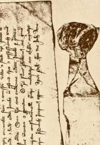
fta
a-, i
4 ii
| &-8 4 ? .j SLsl
54 § f %Xa 1
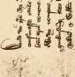
J**.
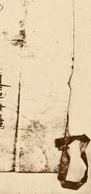
From the History of the Cockburns of that Ilk we learn that in 1451 James, the elder son of Walter Tweedie of Drummelzier, married Margaret Giffert, the widow of James Cockburn, and that Patrick, a younger son of Walter Tweedie, married Mariota, a daughter of Alexander Cockburn of Skirling and Cessford. Patrick appears to have held the cockburns of lands of Hopkelloch or Hopkailzie, a posession of the Tweedie family tbat * p " 220, usually occupied by one of its cadets.
In the manuscripts of the Duke of Hamilton we find a charter by H.D. H54.
James, 9th Earl of Douglas, to James Lord Hamilton, and dated at
Peebles on the oth February, 14154-15, one of the witnesses being Walter *tet./lftSS.
v y . ^°^ . r . lltb IRep. Spp. 6
Tweedie, son and apparent heir of James Tweedie of Drummelzier. This p. 17.
charter must have been made in the midst of all the stirring events which
followed hard upon the chivalrous visit of Sir Patrick Gray, the Captain
of the King's Guard, to the Castle of Thrieve in Galloway. At this time
the Douglas family, the Hamiltons and all whom they could collect to their
support, were in arms and engaged in active warfare against the King, to
avenge the murder of the Earl of Douglas, the father of the 9th Earl.
Many battles were fought in different parts of Scotland between thettalesofa forces of the King and the Douglasses and their allies, among whom c ^ Vt rxi. would appear to have been the Tweedies. Much blood was spilt and great mischief done to the country ; famine and pestilence followed, and the land was everywhere desolate and wasted by civil wars, conflagrations and slaughters, until at length, in 1453, the power of the Douglasses was broken at the battle of Arkinholme in the valley of the Esk.
For- a long period the only sort of organisation in support of law and order that availed on the Borders was that of Clanship and the system of the blood feud which it involved. A blow for a blow and a life for a life was the only code of the blood feud. It was the one check on brute Iblstorg ano force and violence ; and it helps us to understand the social life and history scottisb JBoroer of the Borderers. Occupying an isolated portion of the country between ro1, "• p * 3 ** England and Scotland, and having to depend chiefly on themselves for protection from the Southern foe and from each other, the combination of clans and families was perfectly natural, and thus we need not wonder at at the rise and subsistence through centuries of the family feuds which appear to us so bloody and disgraceful. The feeling of revenge for injury to the person and for violent death is a trait of character which the Low-lander inherited from his Anglo-Saxon ancestry. It is derived no doubt from the instinctive feeling that the person of a man is the most sacred thing about him, and that any injury done to him must be wiped out in blood, a feeling which is in reality just as strong with us to-day, but modern ideas and training teach us to repress it. The whole social history of life on the Borders is full of instances. Even the Church for
/Ifcinatrelsv vif. 144.
•fbtetorv. anD fl>octrv. of Scottieb 3Boroer vol. If. 41.
Ejcbequcr IRolls vol. vt. p. 618.
JMtcairn'a Criminal tlrtals vol. I. p. 26. Cocftburns ot tbat 5lft pp. 211, 225. a.©. 1455.
a time recognised the power if not the propriety of the system. It was long customary in the Border Counties to leave the right hand of male children unchristened that it might deal the more deadly, in fact the more unhallowed, blow to the enemy. Now this may seem a shocking sentiment, and no doubt it would not be justifiable under any perfect system of social law and order. But in those trying times there was no protection for the weak or the injured, and the certainty of punishment under this system was in fact the only restraint in those lawless days on the wrongdoer and the oppressor; and the moral right of self-defence, and the duty of administering punishment, where the law was powerless to protect the injured or punish the aggressor, had risen to a very positive ethical code. The nearest kinsman of the injured or slain was bound to take up the quarrel and the duty of revenge, his kinsmen were bound to support him, and any relative of the man who had done the wrong was liable to have the wrath of the avenger directed against him. Family feuds of the deadliest sort thus naturally continued from father to son through many generations, and in dealing with such a state of things it is very difficult properly to apportion the blame. Even in the time of James VI. there is a certain recognition in the Acts of his Parliament of the intrinsic propriety of the custom, at least of its use and wont, and of the necessity of making allowance for the mutual reprisals that had taken place.
We now come to the first record of one of the many of these feuds in which this family was, and no doubt had been, embroiled for years. Probably they occurred more often than they were recorded, and similar " cruel slauchteris" had, no doubt, been going on for ages between the Tweedies and their neighbours. On the i8th November, 1458, Roger Tweedie and Walter Tweedie (a son of John Tweedie of Dreva) were killed, how and why we know not, by Sir William Cockburn of Henderland, Sir William Cockburn of Skirling, and James Cockburn, the brother of the latter. The great want of variety in christian names, and of any mention in the records of relationships, and indeed the poverty of the actual records, which contain little more than the meagre facts, render the task of framing any consecutive story an exceedingly difficult one throughout, and it is only by inference that anything like a connected history can be pieced together. In this particular case the whole affair is shrouded in doubt, not only of what the facts were, but also of how those concerned came to be mixed up in the quarrel. All that can be ascertained is, that Patrick Tweedie, a son of Walter Tweedie of Drummelzier (no doubt the man already referred to as far back as 1434), had married Mariota, the daughter of Alexander Cockburn, whilst James Tweedie, the elder son, had married Margaret Giffert, the widow of James Cockburn, and that there seems to have been some difficulty over the ownership of the lands of
(
■■
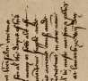
M&%~
4 1 t ?^*'i
flifi^
J.IJ1H5
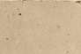
1 i 3
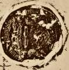
H-
vV
O CJ -•r o
s s |
o w S
rt oo
3 e j?
o s g 5 J §
« ° rt
S "3 -
O C
H c ~ ^ o
Z ■- u
£-5 a
Q 8| ga§
<u
u
NE.S £
2 5*:?
o ~ 5 >, o
ec
id
js s
V
Hopkelloch or Hopcailzie. This affray seems to have taken place in the streets of Edinburgh during the sitting of Parliament, Walter Tweedie of Dreva was killed as we have seen, his sword and shield were carried off by the Cockburns, and an Andrew Tweedie was also ''grievously" wounded, for all of which the Cockburns were ordered to " satisfy " the Tweedies with whom and the Veitchs of Dawick they are stated to have had, at this time, a " deidly feid "; and no doubt, for years after, reprisals went on over the affair.
In the town repositories at Peebles, there is an original charter a 2> -1+62. granted by ''Sir Walter Scott, Knight, Lord of Bukcluch and Kyrkowd,"-Recot&g 1-llov. giving an annual rent from his lands to ''my beloved Cousin James of 1462, Tuede, Lord of Drummelzier (undoubtedly the husband of Margaret Giffert), for his manifold counsels, helps and benefits rendered to me." The seal and the document are both in excellent condition.
This Sir Walter Scott had much to do with the ultimate triumph of the king over the powerful family of Douglas, and the downfall of that sept, and it is curious to find a record of this nature after what we have Scott Gales of a seen of the intimate relations between Tweedie and the Earl of Douglas c t, a p. jjf. only eight years before. At the same time, it is noteworthy that Hamilton, who apparently was also on similar terms of intimacy with Douglas, actually rose into power on the fall of the latter.
The Charter Chest of the Archives of the Earls of Wigtown at 8-B\ 1465. Cumbernauld contains a document dated 10th February, 1465, under which ^Bier's "ftist. of Robert Lord Fleming, Gilbert Lord Kennedy, and Sir Alexander Boyd p. 63. agreed to maintain a certain " Wat of Twedy" in all his causes and quarrels. Who he was exactly cannot be ascertained, but from what we know of the relations of the Tweedie family with their neighbours, he probably had very good reasons of his own for making arrangements for effective and defensive alliances. It is possible that he was Walter Tweedie of Drummelzier himself.
The family appears, however, at the same time, to have been held in a.©. 1467.
esteem, for in the year 1467 amongst the persons ordained by Act of jpacUamcnt of
Parliament to make certain enquiries at Peebles, we find "ye lord of ScotlanO vol. if.
Drumellior;" and in 1468, George Tweedie seems to have acted on j^jp.1468.
behalf of Walter Ker, son and apparent heir of Andrew Ker of Cessfurde, ^ i6t - ^SS.
j u j u- • u u c L. 1 J r tt • ' liv>. IRcp. Spp. 3
and to have represented him in the purchase of the lands of Honimame p. is.
on the 20th May, 1468, at Edinburgh. It is a matter for some speculation,
whether this George Tweedie was not the same as, or perhaps the father
of, the George who founded the family of the Tweedys of Essex,
as " George Twedye who came out of Scotland, from the house called
Dromelzearre," and to whom reference is made hereafter, as these are the
only instances of the Christian name of George found on record. On the 5th
c
B.D. 1470.
■foist. /IfcSS. Jlv. IRep. Spp. 3 P. 27.
a.2>. 1473. "Reg. (Bt. Seal 1424-1513 P. 230.
33uigb IRecoros of Peebles I. pp. 20, 21.
a.D. 1474. Keg. ©t. Seal 1424-1513 p. 237.
Hales of a Oranbfatber cbap. jj.
March, 1470, James Tweedie of Drummelzier formed one of the jury at Edinburgh, who acquitted Andrew Ker of Cessfurde, when put upon his trial " for the traitorous in bringing of James Douglas, traitor, from England within Scotland, and for treasonable communing with divers Englishmen to the hurt of the King, his realm and Lieges," and possibly it was fortunate for Andrew Ker that he had a friend on the jury at this crisis in his fortunes.
James Tweedie of Drummelzier handed over to "James Tweedie the son and apparent heir of Walter Tweedie and Margaret Gifford the spouse of James," a certain portion of the lands of " Hopkelyou," on the 14th May, 1473.
A Chaplaincy was founded at the altar ol St. John the Baptist at St. Andrew's church in Peebles, on the 15th December, 1473, when James Tweedie of Drummelzier (the son and apparent heir of Walter Tweedie), and Margaret Giffert his spouse with other persons, granted the patronage of the Altar to the Bailies and Community of Peebles. It was founded, more particularly, in honour of King James III. and his Queen Margaret, and for the souls of James Tweedie of Drummelzier and some others, and of all who had been slain in the wars of those individuals. There were two charters dated the same day and much to the same purpose, and some unexplained mystery seems to surround the proceedings. Probably, the founding of the chaplaincy may have been intended as an expiation for blood spilt in some Border feud, as hardly any other power than the Church could have compelled these warlike and predatory lairds to trouble themselves to such an extent about spiritual matters.
On the 5th April, 1474, King James III. made a grant of the barony of Cessford to Andrew Ker and his wife, Margaret Tweedie, no doubt the same persons as already mentioned under the date of 1450. It must have been their son or grandson, Sir Andrew Ker, described by Sir Walter Scott as a border chief of great power, who made the celebrated defence of the Castle of Fernieherst, the feudal seat of the Kers, against the English under Lord Dacre, in 1523. The castle was taken, but with great loss to the besiegers. In the evening Lord Dacre encamped close by, and about eight at night, when the English were at supper, the camp was rushed by the Scottish men, whom the English had believed to be defeated and dispersed, the horses all cut loose, and fifteen hundred of them charged down upon the Earl of Surrey's camp, where they were received with showers of arrows and volleys of musketry, for the English soldiers thought the Scots were storming their entrenchments. The tumult was so great that the English imputed it to supernatural interference, and even the Earl of Surrey himself alleged that the devil was seen visibly six times during the confusion.
Walter Tweedie was returned heir of his father, James Tweedie, in 2,,2) -l475 -the Barony of Drummelzier, on the 4th July, 1475, as we see from the ©riginal Cbartere original writs of the family. On the "inquest" we find Sir William le J*^ a ' wec01c Hay (Knight), and William le Hay of Mynzaw, and others, with six Seals, and among the same writs we find a charter by Walter Tweedie, granted about 1476 to Thomas Frysale of Frude, to which the witnesses are James a.®. 1476. V K/^ of Douglas of Balvany, Patrick of Levyngstone of that Ilk, and others. \ I /
Certain members of the family seem to have been inclined to peaceful a.®. 1477. callings, for in the next year we find an Alexander Tweedie, a Burgess of 1424—1513 Edinburgh, as a witness to a charter under which King James III. made P« 262, a grant to one Archibald Dundas, on the nth of June, 1477; though after all, if what is gathered from the city records is true, even the Burgesses of Edinburgh had plenty of fighting on hand at that time and for long after, in order to support the King in his difficulties with his own turbulent Barons, and his more serious quarrels with his cousin of England, and the subjects of that realm on the other side of the Border.
The next incident is an example of " the good old rule, the simple a.2>. 1478.
plan, that they should take who have the power, and they should keep who
can." Some time previous to the 18th March, 1478, James Tweedie and
Marion of Crechton, his spouse, had seized on certain lands known as
" Gaitstakis," belonging 1 to Robert Charters, son of Robert Charters of ®cte TLovi>s
' & ° . ' au&itora p. 79.
Armisfeld, and held them against him by force, and on that day Robert
Charters made formal complaint to the authorities and asked for redress.
This matter was adjourned to " the X. day of Maii nixt to Cum," but it is
to be feared that it never came for Robert Charters, as nothing more is
ever heard of him, and if Robert was not actually put quietly beyond the
power of making further trouble, he no doubt received a sufficient warning
of what might happen. There was in those days a rough and ready method
in Tweeddale of dealing with troublesome people, and there is talk yet
of the terrible knob of stone at Drummelzier that was used as a gallows,
as it also was elsewhere, and was seldom without a corpse or a " tassel " as
it was called, as a grim warning to those who might wish to press undesirable
claims, or be' otherwise unduly inconvenient.
On the igth March, 1478, Thomas Portuis of the Halkshawis (Hawk-acta ILor&e
. au&ttore p. 81.
shaw in Tweedsmuir) obtained a judgment on behalf of himself and the
widow and children of the late Hubert Portuis, his brother, against Walter
Tweedie of Drummelzier, but whether it was ever actually paid we do not
know. On the same day Walter Tweedie, who appears to have been in a
good deal of trouble, had a difficulty with Henry and John Preston in
regard to the marriage of Thomas Somerville, lately deceased, with Walter's
daughter, whose name is not given, but whose dowry apparently had not acta Zor&a
been paid over by her father. Perhaps Walter was annoyed at the death
acta 3Lorc>a auditors 1466-94 P. 65.
a.2>. 1478. TRcq. <Bt. Seal 1424-1513
P. 286.
a.©. 1479.
acts 3Loc6a au&itore p. 76.
3bl&. p. 86.
a.2). 1480. lPceblea Burgb IRecorOe p. 27.
©eeblee 3Burgb IRecorc-a p. 186.
©rlgtnee ©arocbfalee I. p. 180.
a.©. 1481. IReg. ©t. Seal 1424-1513 p. 307.
of his son-in-law, and at finding his daughter on his hands again. After the manner of the times, however, the matter was adjourned, and we hear no more of it.
In the same year, on the nth June, there is a record of a curious dispute between this Walter Tweedie of Drummelzier and " Master Adam of Cokburne of Skraling " about " a futit Cop of Silver with a covertour of the samyn double gilt," which Adam claimed from Walter. This question was also adjourned, with the curious direction that Walter should call witnesses "gif it pies hym," and as is dryly added, " gif he has ony." Whether Adam ever got the cup, history does not relate, but as Walter Tweedie had possession of it, and his death did not take place until many years after, we may have our own views of what the probable ending was.
On the 18th September, 1478, the half of the lands of Halmyr and the Camys were confirmed to Walter Tweedie of Drummelzier, who in the following year comes into conflict with his powerful neighbours, the Hays of Yester, in regard to a claim made by them upon him and Alexander Hors-bruk of that Ilk, as sureties for Gilbert Cokburne of the Glen. In this matter, which was heard on the 13th March, 1479, before the Lords Auditors, Tweedie pursued his old tactics of an adjournment, but without the same success, for it was heard again on the 11th October, though curiously enough the record is silent as to the result.
On the 14th February, 1480-81, Walter Tweedie of Drummelzier served on the Inquisition which declared deliverance in the Justice Air of Peebles.
"Master" William Tweedie, Dean of Peebles, applied on the 15th February, 1480, for a license for Sir William Gibson, the Chaplain of the Rood Altar, to enable the latter to travel for four years, and the license was given by the award of the whole Court. The same ecclesiastic, referred to as "Master Wylyam of Twede, person (parson), of Glengwham, and deyn (dean) of Peblis in that tym," is mentioned in the Peebles Burgh Records under date 23rd of July, 1480, when Herbert Tweedie and others "with consent of the hayll communite of the said burgh (Peebles), passit to the markat cors of the samyn, haf gewyn herytable stat sesing and possession
to Sir Wylyam Thomson, Chaplin, and to his successors
that sail Sing mes and mak service at the Rud altar in Sant Androis
Kyrk of Peblis, in the Rud loft for evirmar to pray for
the sawll of the said Sir Wylyam Thomson, his fader's sawll and his moder's sawll, and for the prosperite and the wellfar of the burgh of Peblis."
In the Register of the Great Seal, in a Charter of James III., under date of 8th May, 1481, Margaret Tweedie is again referred to as the wife of Andrew Ker of Cessford.
Herbert Tweedie again comes before us, in 1482, as an alleged wrong- S3* 1482. doer, with others, in proceedings taken by Johne 01 Gledstanys ot that ^uMtocs p. 98. Ilk and others, in regard to the wrongful occupation of the Common of Cademuir and Common Struther, as to which the Lords Auditors direct an Inquisition to be chosen by the next Justice Air at Peebles, the date of this Act being 26th March, 14S2. The matter seems to have been of sufficient importance to cause King James V. to issue Letters dated at Edinburgh, 6th February, 1484-85, directed to the Justices on the South side of the Forth to make further inquisition, whereof the deliverance or judgment is given on the 18th of the same month against Johne of Gled-stanis, the finding being that the Common of Cademuir and the Common (Peebles SBurgb Struther belong to the Burgh of Peebles, whose interests apparently 2 g C ° V 6 PP ' ' Herbert Tweedie was upholding.
A complaint is made, in 1483, by one Henry Preston against Gilbert a.2>. t483. Tweedie for the latter having carried off '' eighty ewes, a horse, and a pair auditors p. 117. of brigantynis," and Gilbert is summoned, but whether he ever appeared we do not learn—probably not.
Laurence Tweedie was sub-prior of Melrose Abbey about this time, S.H>. 1484.
for, on the 24th April, 1484, he made a grant in his official capacity as
such to David Scott of Branxholme of the bailliary of the lands of Esdale. HMetors of
It is somewhat reassuring to find that the family counted among its ** ^ * 5 %
members both the Dean of Peebles and the sub-prior of Melrose, and it is to
be hoped that the influence of these divines was exerted in a proper direction.
Alexander Tweedie and John Tweedie are found as witnesses to ^eg. (St. Seal
, PP- 337, 349.
charters in the years 1484 and i486, in one of which the unusual name b.d. 1486.
of Yhoile appears as a surname.
An entry in the Acts of Parliament for the year 1487 shows that the H.2). 1487. Laird of Drummelzier was in some trouble, for the King issued a precept vol> (( p jg^ on the 15th October calling upon all Prelates, Bishops, Abbots, Earls, and Parsons, to attend in Edinburgh to advise the King upon certain matters, among others " the pcess of forfatn of ye lard of Drumelzor and Edward Huntr, etc."
Trouble arose shortly after with Thomas Porteous of Hawkshaw, who S.2). 1489. was arraigned on 16th February, 1489, for having, no doubt by way of auoftors p, 137, reprisal for some injury, lifted seventy-four lambs from the lands of Oliver Castle, belonging to William Tweedie and Laurence Tweedie.
On the 16th April in the same year King James IV. confirmed a IReg. ©t. Seal charter by Christian Dikyson, the wife of " Walter Tweedie of Drummelzier," and one of the heirs of John Dikyson of Smithfield, in favour of Elizabeth her daughter, of lands called the Denys.
Something of the state of the Lowlands and the Borders at this time may be gathered from the legislation of the period. We may be sure
c *
that if it had come to having to deal with the troubles by Act of Parliament, things must have been very bad indeed. Personal conflicts, raids and slaughters, no doubt, were matters of every-day life, long before they attracted such attention as that of the King and Parliament, and it would need a graphic pen to give any adequate description of the daily scenes of those times.
The internecine strife of the powerful families of the Borders however
at length engaged the attention of Parliament. In the year 1428 a Statute
had ordained " that na man suld ridande na gangande cum to na Courte
Scot vol ti na Semblay with multitude of folkys na with armys." The matter again
P-122. came before Parliament in 1478, and in the accounts of the Lord High
a.2>. 1401. . r •
Cbron. & flhem. Treasurer is found under date the 6th of August, 1491, an item: "to pass
accounts Xoro to tne ] a rdis of Lammyngton, Drummelzeare (Walter Tweedie), and Iblgb ^Treasurer . . „
vol. (. p. ISO. Hawkshawis, to gar them cess a gadering."
Trouble seems still to have been on foot between the Hays and the
Tweedies, for on the 6th May, 1491, John Tweedie, of Drummelzier, is
called upon by the Lords Auditors to pay over the sum of ^96 8s. claimed
actsXoros of him by Christian, the widow of the late Thomas Hay, the sheriff depute
of Peebles, and penalties are ordained on him in default. In the statistical
Statist, ace. account of Scotland it is alleged to have been a Thomas Tweedie who owed
Scotland p. 922. , . . .... r T , . . .. . .. , ,
this money, but this is incorrect, tor John was the delinquent. A little later
JblD. p. 149. in the same year another decree issues directing "to distrenze" William
Tweedie, " brother to umquhile (i.e. the late) the Lord of Drummelzare," for another sum of money, apparently a balance due by him to the same lady, but it is recorded that William Tweedie was " oft tymes callit and nocht comperit," an easy way of dealing with such demands when the authorities who make them have not the power of enforcing their judgments, as was only too often the case on the Borders in those days.
a.H>. 1492. Not content with troubles abroad the Tweedies are found in the next
year quarrelling amongst themselves. On the 4th February, 1492, the Lords of Council found " for ocht that they have yet sene, Johne Tweedy of Drummelzare dois wrang in the vexacioun and distroubling of James Tweedy, his brother, and his tenentis " in the peaceable possession and cultivation of
Seta Somlnoram the lands of Home Huntaris land. He was ordered to desist, James having V 272
produced a charter from the late James Tweedie of Drummelzier ; and was
also directed to restore a " herezeld ox " which he had taken from the lands
in question. XeOger anorew In the Ledger of Andrew Halyburton reference is made, under the
p. iju, dates 1492-1503, to certain members of the family of Tweedie having been
trading correspondents or customers of his, but it is added that not much
is known of them individually.
In 1492 appears, in the accounts of the Lord High Treasurer, the
following item: "and sua restis toyidder with twenty poundis for finance of^ 10 ' 1 -?*
s J . . ,, /Iftemortals
James Yong and Johane Yong Wat of Twedy in Peblis, ,£488 2s. 3d." accts. Xoro
Sasine is granted, in 1492, to John Tweedie, of the lands of Drummel- vo ® ^ p 2 05. zier, Hopkelloch, Vestir (? Yester), and Halmyr. JErcbecjuer IRolls
A statement is made in Burke's Landed Gentry that Andrew Tweedie jsurfce Xanoe£> of Oliver Castle and his kinsmen, Andrew and Walter of the Drummel- ^"^tion"' zier family, had a Suit in 1492 against William Flemyn of the Borde for p. 1866. the possession of half the lands of Kingledoors, and this information is also vo r t £ p 4 203.' to be found in the Origines Parochiales.
The name of John Tweedie occurs constantly in the records of the
Register of the Great Seal during this period as a witness, but who he was
in particular does not transpire. In 1493, however, as appears from the a.2>. 1493.
original precept from Chancery dated 3rd June, John Tweedie of Drummel- ott jj e £ We coie
zier is instituted in the lands of Drummelzier as the heir of his father the ffamtlB.
late James Tweedie. There is also an entry to be found under the same
date, in the Ledger of Andrew Halyburton the Edinburgh merchant, in Xe&get Sn&rew
s 3 . f . IbalBburton
regard to a commercial transaction with a John Tweedie, but whether this p, 10.
is the same or another man is not clear.
In the next year a remission is granted to Walter Tweedie "for the D ,s> ' J 49 ** ,
3 • , 1 Bets fcorfc Utflb
slauchter of Alexander Bell," but no further information regarding the {Treasurer vol. i.
episode is recorded. It may, however, be assumed that on this occasion p "
Tweedie had right as well as might on his side, or he would not have
gone boldly to Edinburgh for a pardon.
In 1495 there is mention in the Ledger of Andrew Halyburton of Xeoger anorew another dealing with " John of Tuedy," whose wife's name apparently was '
Margaret.
In November of the same year a complaint was lodged by George Beta. ©om. Edwardsoun, a burgess of Edinburgh, before the Lords of Council, against p , 413,' John Tweedie of Dreva, because the latter had put him to much trouble by commencing an action against him and then not appearing to prosecute it. On the 13th of the same month a John Tweedie accepted office as an 3^0* P. 429. arbitrator to settle a dispute between certain persons. This arbitration was to be held at St. Giles's Kirk, and if this be the same John Tweedie of whom George Edwardsoun complained, it would seem that Tweedie had more confidence in his own dispensing of justice than in that of the Lords of Council.
At a Justice Aire, held at Peebles by Lord Drummond, 15th a.2>. t498. November, 1498, John Tweedie of Drummelzier and five others "came in fl) 0ugc 0 { at the King's will" and were each fined five merks for " act and part" Fleming p. 297. in an act of oppression committed on Oswald Porteous and his wife Janet in ejecting them from their holding in Upper Kingledoors. The act of " coming in at the King's will " was a recognition of the sovereign power so
apparently foreign to the nature of these Border lairds that it would almost seem as if the delinquents on this occasion had ascertained previously that merely a nominal penalty in the shape of a small fine would be imposed.
This incident brings us to the close of the 15th Century, and full though its records are of feuds, slaughters, and forays, we cannot but feel that they really tell us only little of what actually went on ; we are left to picture for ourselves the lawlessness and disorder that prevailed in the Lowlands and on the Borders of Scotland in those days with the ever-present danger from the English across the Border and the deadliest feuds existing between the nearest neighbours, and it is indeed almost impossible to realise the state of constant alarm and watchfulness in which the entire population must have spent their lives.
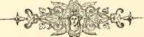
CHAPTER III.
A.D. 1500.
IT would seem as if we chronicled nothing but the misdeeds of the family, but the truth is that the only available records are those of the crimes of the period, and hence the character which pervades the story. It is, indeed, an illustration of:—
" The evil that men do lives after them ; The good is oft interred with their bones."
and so we will hope it was with the Tweedies, and putting the most charitable construction on the matter, let us trust that their unrecorded good deeds at least equalled the evil doings, of which we find so continuous a history.
On the 4th February, 1502, Gilbert Tweedie and others were b.D. 1502. arraigned for the slaughter of Edward Hunter of Polmood. John Tweedie *«weor*Ieminfl of Drummelzier, Walter Tweedie of Hawmyre, and William Tweedie P. 207. became sureties for the appearance of Gilbert Tweedie at the next Justice Aire at Peebles, under a considerable penalty ; but what the outcome of it all was we do not know.
On the 15th May, 1505, the lands of Clifton, in Roxburghshire, were H.2). 1505. confirmed to James Tweedie, son and apparent heir to John Tweedie of i^^L-js^ Drummelzier. These lands are stated to have been mortgaged by P« 60& -Walter Tweedie of Drummelzier, and redeemed by this James Tweedie, his son.
Amongst the original Drummelzier writs, we find a receipt by a,©, 1507.
Patrick, Earl of Bothwell, to John Tweedie of Drummelzier, dated ©rifltnal Cbartera
. of tbe ttweeole
25th June, 1507, with the signature of the Earl intact. jfaintre.
It is curious, remembering the slaughter of Edward Hunter of
Polmood by the Tweedies in 1502, that in 151 1 the Horne-Huntaris
Lands in the Barony of Innerleithen, which belonged originally to the a.©. 1511.
Hunter family, were granted by James IV. to John Tweedie, who is \/mJ.\5\*
described in the Charter as " the Lord of Thanes (Tinnies) Castle, in P. 768.
Drummelzier;" the reddendo being "two flatus (viz., blastis) unius cornu ad
excitandum Regem et ejus venatores cum contingerent eos esse in
venatione in le Kingis-Hall-Wallis," that is to say, ''two blasts on one
horn to arouse the king and his hunters, when they happened to be
Dtstorg of
Gwecooale.
lpennecuffc
p. 251.
Chambers'
peeblesbtre
pp. 425, 429.
3.©. 1512. 38iggar ano tbc ■fbouseof jFlemtng p. 320.
S.2>. 1513. protocols in Diocesan "Register IRo. 66t.
•R.O.S. 1424-1453 p. 846.
IRental JBoofc of tbe ©10 JBarone of Stobo.
B.D. 1523. 1R.0.5. 1513-46 p. 54.
B.S>. 1524.
engaged in hunting in the lands of Kingis-Halls-Wallis." Polmood, the residence of the Hunters, being held of a subject superior, the Charters did not enter the Great Seal Register, and consequently the opportunity is lost of tracing the originating germ of the fanciful Charter quoted by Pennecuik, under which Malcolm Canmore is represented as granting the lands to an ancestral Hunter. Interesting particulars as to the Hunters of Polmood and their estate, and also a view of Willie Wastle's abode, " the spot they ca'd Linkumdoddie," will be found in Chambers's history of Peeblesshire.
In the year 1512, John Tweedie of Drummelzier, Richard Brown of Coultermains, and James Lockhart of Lee, became sureties for John Symintoun of Symintoun, who was arraigned on a charge of treason for forging false money, and as Symintoun did not appear, they were "amerceated in the sum of 1,000 merkes."
In the year 1513, Walter Tweedie was appointed to the office of Parish Clerkship of the church of Stobo, vacant by the death of Thomas Tweedie. It is on record that Walter was distinguished for his clerical character, and was otherwise considered to be suitable for the appointment from both a spiritual and temporal point of view.
In the same year, John Tweedie is mentioned in a footnote to the Charter granted at Edinburgh on the 17th August, as being the owner of lands adjoining those mentioned in the Charter.
This year of 1513 was that of the fatal battle of Flodden, and seeing the intimate relations which the Tweedies had with the other, powerful Barons of the district, it is not surprising that a long gap takes place before we hear very much more of them. No doubt most of them and their available followers fell with many others of the flower of Scotland in that fight.
" Christiane of Tweedies" apparently gave consent to an arrangement under which James Noble was made tenant of " Ane Ox Gang Land," in Stobo, on the 12th April, 1522,
John Tweedie appears as witness to a Charter on the 4th September, 1523, to William Elphinstoun, a Burgess of Edinburgh.
The year 1524 brings us to the story of the feud between the Tweedies and the Flemings. The cause is not very accurately known, but it seems to have arisen over the disposal in marriage of Catherine Fraser, the heiress of Fruid, in Tweedsmuir. Catherine was a descendant of the old family that had held large estates in the upper part of Tweeddale for many years, and was connected with the Flemings by the marriage of Patrick Fleming of Biggar with one of the heiresses of Sir Simon Fraser in the 12th or 13th century. The Flemings, with their connections the Hays of Yester, claimed some control or superiority over the lands of
Fruid; while it will no doubt be remembered that one of the granddaughters of this Sir Simon Fraser had married a Tweedie.
John, Lord Fleming, desired Catherine to marry Malcolm, not his heir of that name, but another and probably an illegitimate son ; and indeed, it is doubtful whether she had not been actually married to him. If so, it had been done by stealth. The Tweedies, on the other hand, were determined that she should marry James Tweedie, the nephew of John Tweedie of Drummelzier. Ascertaining that Lord Fleming, accompanied by his heir Malcolm and a small retinue of domestics, intended to go hawking over his lands near Drummelzier, about forty or fifty of the ,« r j a ( na i Qhartera Tweedies assembled and waylaid the hunting party among the hills. A of tbe ttwceole hot altercation ensued, ending in a fight, in the course of which Thomas Tweedie of Drummelzier slew Lord Fleming.
Miss Agnes Strickland, in her *' Lives of the Queens of Scotland,"
says that it was " Douglas, Lord of Drummelzier," who attacked and murdered .g}( aaar ano tbe
Lord Fleming, and that this was done on the threshold of St. Giles' Ibouae of fflemlnfl , . t- 1 • , 1 • r pp.300,301,302,
church, in Ldinburgh. She does not cite her authority tor these statements, ctc>
which are not borne out by the records of justiciary, the documents of the
Wigton Charter Register, nor the assertions of the old historians. Not a
word is said in any of these authorities which in any way implicates any
Douglas in this transaction, nor was a Douglas the Lord of Drummelzier,
, t ■ j r tv ■ 1 1 r j T7t ■ 1 • Cochburne or tbnt
and Lindsay 01 ritscottie expressly says that Lord Fleming was slain g^ p< 208, etc.
when enjoying the sport of hawking.
The Tweedies carried off young Malcolm, now Lord Fleming, and
kept him in confinement at the " Place of Drummelzier" until they
extorted from him a promise to confer on them the ward and marriage ofGbambcra'
r t- • 1 » , , r r ,,-, c . • • pceblcsebltc
the heiress 01 rruid. As a pledge for the fulfilment 01 this promise, p 444
young Lord Fleming's brother and some other persons were given into
the custody of the Tweedies, and were for some time prisoners at
Drummelzier. On regaining his liberty, Fleming sent Catherine Fraser to
Drummelzier with her title deeds, but, being anxious to recede from his
promise, put it on record that he did so solely for the purpose of obtaining J*^tar PClenw
the release of his friends, and from a dread of the vindictive character of
the Tweedies.
Other legal instruments, still preserved, assert that Catherine had
gone to Drummelzier against her inclination, and solely for the purpose of
liberating the prisoners, and that whatever she might say or do on that
occasion could not legally be used to the prejudice of herself, her estates,
or her marriage. These documents are dated the 17th and 25th November,
i5 2 4-
The Civil Authorities lost no great time in making efforts to bring the Tweedies and their accomplices to justice. In the course of fourteen
days after the death of Lord Fleming, it appears that a number of them had been seized or bound down to " thole an assize," for at that time a respite of one year was granted to James Tweedie, the nephew of John Tweedie of Drummelzier, and other persons for the '' cruel slaughter" of Lord John Fleming, and the treasonable taking and preserving of Malcolm, the Master of Fleming, his son, and for the " reif of certain gudis fro yame and yer seruandis ye samyn tyme."
From an indenture made at Edinburgh on the 23rd November, 1524, and still preserved, it appears that by some influence or other it was arranged between Malcolm Lord Fleming and James, the nephew of John Tweedie of Drummelzier, " that a reconciliation shall take place and all previous wrongs shall be forgiven." This document intimates . that James Tweedie and his men went to the market cross of Peebles "in their lynning claithes, viz., sark alane," and there offered their naked swords to Malcolm Fleming, his kin and friends ; bound themselves to be his servants and gave him a bond of man-rent. Whereupon, Lord Fleming, on the part of himself and friends, received James Tweedie and his men " in their faithful troth and kindness," and forgave them the injury which they had inflicted, and, in token of his sincerity, extended to them the right hand of fellowship, and agreed to support and defend them in all their actions lawful and honest.
Tweedie and his followers agreed to make the three great pilgrimages of Scotland, namely : St. Ninian's in Galloway, St. Duthus in Ross, and St. Andrew's in Fife, at each of these places to make offering and call mass to be said for the welfare of Lord Fleming's soul; and they were to infeft a Chaplain to say mass at the high altar of Biggar Kirk for the same purpose. It was finally agreed that James Tweedie, the nephew of Walter Tweedie, should be married to one of Lord Fleming's sisters, and that an honest and competent livelihood should, at the sight of friends, be bestowed on the young couple by Tweedie, and that Tweedie was also to receive the ward and marriage of the heiress of Fruid.
It appears from several documents still extant that the terms of this agreement were not strictly adhered to, and that the vengeance of the law ®.2>. 1525. still pursued the Tweedies and their followers, for in 1525 the lands of
Easter Drummelzier, with the Place of Tinnes, Hopcalzie, and others belonging to John Tweedie of Drummelzier, and of Wester Drummelzier with the Places thereto belonging to James Tweedie of Glenbrak, and others belonging to both father and son, were all confirmed to Lord Fleming by a •R.(5 : S. 1513—46 Crown Charter, dated 12th August, but were declared to be redeemable by the Tweedies within seven years on payment of certain fixed sums. The writs whereby the Tweedies were reinstated do not occur in the Register ; but that such restitution took place is shewn by the fact that they
subsequently dealt with and occupied the properties as their own ; while amongst the original documents of the family is a decree of the Lords of Council, dated 27th September, 1526, at the instance of Malcolm Lord Fleming, against John Tweedie of Drummelzier and others for delivery of ©rig. ftwee&le the lands and fortalice of Drummelzier, which it would seem must have Q^^exe been successfully resisted.
On the 6th June in the following year, however, a respite was granted for nineteen years for James Tweedie of Drummelzier, James Tweedie of Kirkhal, and twelve others, for the crime of murdering Lord Fleming. On the 18th August a petition in connection with this transaction was presented "Register privg to the Lords of Council by George Geddes of Kirkurd, by which one an j> \qx^ ^ufluat William Tweedie states himself to be a scholar, that he had nothing what- * 527, ever to do with the slaughter of Lord Fleming, and that at the time the crime was committed he was in the school in Edinburgh. The petition was admitted and the name of William Tweedie was erased from the Books of Adjournal.
From the Register of the Great Seal it would appear, under an 1R.©.S. entry of the 10th November, 1527, that a Janet Tweedie was the wife ofp,n6. George Ross of Hanyng at this time.
Amongst the manuscripts of the Earl of Home is to be found a B.5). 1528. contract dated the 9th October, 1528, under which King James V. undertook to grant a release to Lord Home, his kin, and friends dependent upon Ibtst. /BSSS. him, for all crimes bigane ; the Tweedies and all others who had been at the |p t 8 » Yso. slaughter of the late Lord Fleming being especially exempted from this pardon.
On the 22nd October, 1528, the Tweedies were declared to be fugitives from the law, and were put to the horn, and their lands forfeited and conferred as a gift upon Malcolm Lord Fleming.
In the spring of 1529 the case was still unsettled, as it appears that S^®-1529. at that time John Tweedie of Drummelzier, John Tweedie dwelling with him, Thomas Tweedie of Oliver Castle, James Tweedie of Kilbucho, and James Tweedie of Wrae, were compelled to find security to appear at Peebles and answer for their part in the cruel slaughter of John Lord Fleming, John Hay of Yester going security for their appearance. With them were also summoned James Tweedie of Drummelzier, and ten others, who offered Sir Walter Scott, of Branxholme, as their cautioner to answer at the same time and place for the above crime.
On the 18th September, the King's Messenger-at-Arms had been despatched with the King's writings to summon an assize to convene at Peebles on the 13th day of October, betwixt the Laird of Drummelzier and John Fleming of Biggar. This assize, however, did not give a deliverance on the merits of the slaughter and disputes, but referred the whole case for arbitration by the Lords of Council.
On the 2nd March, 1529, we find John Tweedie of Drummelzier as one c ™* fgQ l5l3— * 6 and on the 7th December in the same year a reference to Tweedie is
•foist. dftSS.
p. 537. one of the witnesses to a precept issued by George, the Bishop of Dunkeld,
is found in the Register of the Great Seal in connection with matters relating to the Barony of Stenhouse in the County of Lanark.
S.S>. 1530. On the 4th March, 1530, the whole matter of the slaughter of Lord
Fleming at last came up before the Lords of Council, when they
pronounced a decree by which John Tweedie of Drummelzier was ordered
IRegtster prlve to found a Chaplainry in the church of Biggar, and to endow it with Council. 1 . .
a yearly stipend to make provision for prayers for the soul of the late
John Lord Fleming. It was further ordained that James Tweedie, heir-apparent of Drummelzier, and the other chief persons concerned in the slaughter of Lord Fleming should go out of the Kingdoms of Scotland and England within three months and remain abroad three years, or during His Majesty's pleasure, and that the parties in dispute should, in the presence of the King's Council, take each other by the hands and bind themselves for the orderly behaviour of themselves, their kin and followers. S.2). 1531. This decree was confirmed by James V. on the 22nd March, 1531,
and the marriage of Catherine Fraser to James Tweedie was part of the
"Reg. <Bt. Seal bargain, and the King also, in this same year, granted a charter of the 1513-46 p. 236. f „ 5 , . ' u t t j- u
lands 01 rruiu to Catherine rraser and her spouse James I weedie, the
nephew (nepos) of John Tweedie of Drummelzier." All this shows that the
Tweedies gained their point with the full sanction of the King and the
Lords of Council, and we are tempted to think that perhaps after all they
had been as much sinned against as sinning. Young James Tweedie and
Catherine Fraser were possibly in love with and pledged to each other
from the first, and Tweedie had determined to marry her in spite of Lord
Fleming's declared intention of providing for his illegitimate son by a
marriage with the heiress.
Under such circumstances one need not wonder at the hot words and the personal conflict which ended in the death of Lord Fleming, or at the persistence of young Tweedie in his purpose, which he eventually gained, of marrying his love. And it may not be unreasonable to surmise that, whilst the Lords of Council could not overlook the killing of Lord Fleming, in which the Tweedies were undoubtedly wrong, yet they took into account the provocation that had been given and recognised the rights of the Tweedies in the quarrel, or they would never have countenanced, much less sanctioned, the marriage of the young couple.
It must have probably been about this period that the event took place which has been the subject of a curious tradition in Tweeddale. For many years a small property known as Duckpool was held by a family of the
name of Bertram. Its extent was no more than a Scottish acre, and the
origin of the ownership was accounted for in the following legend:—
" King James V., who occasionally during the hunting season spent a
few days at Polmood, and who was also somewhat fond of masquerading
amongst his subjects in humble guise, was, one day, returning either from
hunting or some other expedition in disguise, when he came upon an old B*e Gockburns & l . . ....... of tbatjlhp.207.
man named Bertram, who was tending his cows and amusing himself with a
tune on the bagpipe. The monarch accepted an invitation to the cottage of ot g^otlano ' '
his new acquaintance and was there entertained hospitably, but with homely vol. (if. p. 86.
fare, by Bertram and his wife. In the morning the King disclosed to his Galebonfa bg
host who he was, and promised him a grant of lands in view of his house, „ q\q,
with a pool in the centre, in memory of the tunes played on the bagpipe
the evening before, and as much ground at the foot of Holmes Water as
would keep a mare and foal, with a brood sow and nine pigs, with a free
passage for them to and from his house. They were to be driven at no higher
rate 'than a woman could walk knitting a sock or spinning with a distaff,'
and Bertram was also to have five ' soums' of sheep on Holmes Common.
" Thereafter the King, accompanied by Bertram, who had offered to be
his guide, set forth on his journey, in the course of which he soon came,
as some say, to the Castle of Drummelzier, and others, that of Tinnies,
but in any event, one of the strongholds of the head of the Tweedie family,
a Chieftain who was in the habit of exacting homage and levying tribute
from all passers by. The King and Bertram passed by without yielding the
accustomed homage, when Tweedie, who had ever at his call men-at-arms
and horses ready, immediately pursued and fell upon them with his armed
followers. The King, however, taking a bugle from his side, sounded it, and
in the course of a few minutes twenty-four belted knights with their
retainers appeared to his assistance. The King revealed himself, to the
discomfiture of the borderers, and demanded from Tweedie the homage
which even in the midst of his fastnesses that Chieftain could not refuse,
especially in view of the overwhelming force around him. Throwing himself
on his knees he implored the clemency of his Sovereign, from whom he
received a gracious pardon coupled with a few befitting admonitions, and the
condition that he should convey to Bertram an acre of land in the centre
of his possessions to be held for ever in memory of the services rendered
to the King."
The fact that the Tweedies exacted homage from all who passed their ftenneculfc
. (Twee 00a le
stronghold is no doubt true, for it is borne witness to by many writers, and as p. 254 <Sc.
for the above legend, so late as the present century even, William Bertram, of
Bertram Land, owned this acre. The title of John Bertram and Agnes Seaton,
his spouse, is recorded in the Sasine Register of the 12th December, 1793;
and the property was recently acquired from their successor by Tweedie of
©rigtnal JTwecdic On the 19th October, 1531, we find amongst the original Tweedie
Cbartersano „, , , ir . . . , ™ T ^ ,.
TRUrlts. Charters and Writs, a seizin on precept irom Chancery to James 1 weedie
Quarter in the year 1850. The titles shew that Bertram did not hold
direct of the Crown but of a subject superior, and this accounts for the
absence of Charters in the Great Seal Register. Further research in the
Sasine Register or amongst the Title Deeds would be necessary to elucidate
the actual facts.
peerage of In Douglas's Peerage of Scotland we find the record of the marriage
JDouglas's °f Elizabeth, the eldest daughter of John, the second Lord Hay of Yester,
2no£ottion by Elizabeth Chreighton, to Tames Tweedie of Drummelzier, somewhere
p. 605. J s » J >
between the years 1530 and 1540. The date of her parents'marriage would
appear to have been about 1511, and the lady must have, therefore, been
between 20 and 25 years of age at the time of her marriage.
1R.©.S. 1513—46 On the 29th April, 1531, the King confirmed a Charter to John Tweedie
of Drummelzier, amongst the witnesses being another John Tweedie.
Burke 3Lanoeo In the same year, Margaret, daughter of Thomas Tweedie of
©entrg vol. lit. „ , . . ,„,.„. f, , „ , , r ,
a.2>. 1531. Drummelzier, married William Murray ot Komanno, the grandson ot the
" Outlaw Murray."
On the 19th
Charters and Writ?
as heir to his father, the late John Tweedie of Drummelzier. On the 2nd
IRefi. ©t. Seal 111. December in the same year, the King confirmed a Charter, dated 10th August,
1531, to John Tweedie of Drummelzier, under which the latter was to
surrender to Sir Andrew Brown, Chaplain of the Altar in Biggar Church,
and to his successors, an annual rent of £10 furth of the Lands and Barony
of Drummelzier. This penance was also, no doubt, a further compensation
by the Tweedies for the attack on Lord Fleming; and the ancient
document tells us that the annual endowment was provided " to infeft ane
Chaplaine perpetuallie to say Mass in ye Kirk of Biggar at ye hye altar
of ye sayme " for the soul of John Lord Fleming, whom Tweedie had slain.
There would appear to have been some trouble in the town of Peebles
regarding the applications of Sir John Ker and Sir John Tweedie for the
Chaplainry of the Altar of St. Mary the Virgin, in the church there, about
U.W. 1532. the year 1532. There was continuous litigation and trouble over this
JSurgb lRccorfis matter for many years, and Sir John Tweedie would appear to have been
rejected notwithstanding that he had the support of his powerful cousins,
the Tweedies of Drummelzier, because he was found unlearned in Church
Song by the greater part of the Council of the Burgh and the Dean and
Choristers of the Church, whilst Sir John Ker was found fit not only in
reading but also in chant. But it would seem notwithstanding that Sir John
Tweedie eventually carried the day, and retained the Chaplainry until a
few years after the Reformation, when he resigned in favour of Gilbert
Tweedie, another Chaplain.
The records of all these ecclesiastical troubles are of considerable length,
of Peebles.
and the curious in such matters are referred to the originals for the details of a remarkable struggle. King James V. himself seems to have supported Sir John
Ker, for he wrote a letter dated 6th August, 1532, from Edinburgh to the Bailies ^ oro ' lRecoros of
r n ut • • i_ 1 r jo t l v j j- t 1 Peebles nvfii.<S
01 reebles, requiring them to defend bir John Ker, and commanding John jj(j. 1532.
Tweedie of Drummelzier, and William Tweedie, and their accomplices to desist
and cease from molesting and troubling Sir John Ker in the peacable " joising of
his said alterage," all of which, however, would appear to have been of no avail.
On the 17th December, 1533, we find in the Register of the Great B.D. 1533. Seal the record that the King at Coupar confirmed a Charter by which John Tweedie of Drummelzier granted the lands of Hopcailzie to his 1R.©.S. 1513—46 grandson, John Tweedie, the son of James Tweedie and Agnes Somerville, the daughter of Hugh Lord Somerville.
The rental book of the old Barony of Stobo tells us that on the 18th B.2>. 1534. June, 1534, Thomas Russel was the son of Jonat Tweedie, "his modyr," and that James Tweedie held four ox gangs in the Hill House of Stobo.
John Tweedie of Drummelzier throughout all this period appears at different times as witness to various Charters recorded in the Registers, and notwithstanding all that had passed, James Tweedie of Drummelzier seems to have been high in the royal favour shortly afterwards, for in the year 1536 we S.2>. 1536. find that he married Marjorie (Mariota), the daughter of Lord Somerville, ^ peevnae ot sister of the Queen herself, and that King James V. invited himself to the Scotlanb p. 508.
marriage, Tweedie being described as "the Laird of Drummelzier, chief of the
~ ,. . r, ac j • t- j j 1 »Cocftburns of tbat
1 weedies, as eminent a caron, and as 01 great command as any in 1 weeddale. $[& p, 250.
On the 3rd October, 1537, the King confirmed James Tweedie ofS.©. 1537.
Drummelzier in the Home Hunter Lands, to be held by him under the vo i, j^j. p. 743,
same curious tenure as mentioned in the Charter of 1511, already referred to.
Catherine, the daughter of John Bethune of Balfour appears to have JBurfce's Xanbeb . , „ . . . , , , ©enttg vol iff.
married a 1 weedie 01 Drummelzier between the years 1540 and 1550.
John Tweedie became seized of the Lands of Whitslaid and Glenkirk Exchequer •Rolls in the year 1540, as would appear from the Exchequer Rolls.
In 1540, James Tweedie of Drummelzier resigned in favour of himself and &.2>. 1540. " Mariota" Stuart, his spouse (the " Marjorie " already mentioned), his lands p.^gg' lying on the west side of the Burn of Drummelzier with the Tower thereof, and a Crown Charter was granted in their favour on the 5th June in that year, and another Crown Charter was granted to them on the 26th February, 1541, of the Lands of Drummelzier occupied by James Tweedie and others, with the Fulling Mill lying on the west side of the said Burn, in the Barony of Drummelzier.
The names of Walter Tweedie, John Tweedie, Henry Tweedie, and CK. vol. jvff. Margaret Tweedie, appear in the Exchequer Rolls during the year 1540 in reference to the lands of Fareholme and Glenbeth.
The rental book of the old Barony of Stobo gives, on the 28th B.B. 1545. January, 1545, an extract shewing that Adam Tweedie dealt with the four
D
ox gangs of land called the Hyllhousse with the consent of James Tweedie
and of Margaret Tweedie, " his modyr," at that time.
The troubles with the Flemings seem hardly yet over, for we find in
the Acts of the Parliament of Scotland at this time, under date the 3rd
October, 1545, a complaint by Malcolm Lord Fleming to the Lords in
Council stating that, as they were already aware, they had caused him to
give assurance to George Douglas and James Tweedie of Drummelzier for
good behaviour, and that in like manner George Douglas and James Tweedie
of Drummelzier should have given the same to him, but had not done so; and
act Scot. that he was informed a bill had been given to the Oueen's Grace and the Council
parltamentvol.il. . . & 7
p. 460. by the young Laird of Drummelzier " proportand that he, Lord hleming, was
both traitor, thief and inbringer of Englishmen, and resettar of thift, and caused
all the whole country to be harried, which, if so be, he ought to be punished."
•R.p.C. vol. i. p. 7. Shortly after, Queen Mary and Murray, the Regent, gave assurance
to George Douglas and the young Laird of Drummelzier, their kin, friends and servants that they should be unhurt, whilst in the following year,
K.D. 1546. 1546, on the 11th June, there is another entry in the Register of the
Privy Council relieving James Tweedie of Drummelzier from the process
of the horn for non-compliance with the order for him to come forward
IR.p.C. vol. 11. and underlie the laws for certain crimes imputed to him; William Tweedie, t>. 29.
his son, promised to cause the father to answer for the summons, and
David Hamilton of Preston went surety to the same effect.
The process of the horn, so often referred to in the records of
Scotland, had reference to a process of being denounced rebel by the blast
of the horn in the market-place or some other public place in the district
in which the delinquent resided.
B.JD. 1548. In the year 1548, on the 12th June, James Tweedie of Drummelzier
is again found figuring in the records of the Acts of the Parliament of
Beta parliament Scotland under an accusation of treason and lese-maieste. The details of
Scot. vol. il. . , . 1 1 » ■ 1
p.481. the crime are stated to have been given "at mair lenth in the summons;
the summons itself, however, is not forthcoming, and we do not know what
it actually was that James Tweedie had done. Sets privg Under date "yet Wedynsday the xix. of Februarie, 1549," a warrant
vol. it. p. 396. ' s i ssue d from the Privy Council of England " for £2% to Edmund Twedy,
Captain, of Haddington, by way of reward." B.2>. 1549. On the 21st February, 1549, there is an entry in the Exchequer
Rolls to the effect that Walter Tweedie was concerned in the lands of
Ejcbecmer IRolls Whitslaid at that time, and had dealings therewith of sufficient importance ofScotlano . .
vol. jviii. p. 489. to be entered upon the public records of the period.
a.©. 1550. On the 31st July, 1550, William Tweedie was served heir to his
_ brother Tames Tweedie in the lands of Whitslaid and of Glenkirk in the
peebleeablre. Barony of Glenquhome. This William Tweedie married Christian Dalzell,
and was of Gannoch, as we find afterwards when he and his wife took a R-<3.5.1546—80
v 193 charter of the lands of Carrokiore in the parish of Mochrum in the County
of Wigton. Reference again to this William Tweedie is found in the year'R.C.S. 1546—80
1556 in the Register of the Great Seal, when his name is mentioned in
the footnote of Charter No. 1127 as amongst those of assize summoned at
that time, and also in the year 1570, when Christian Dalzell, then his
widow, had dealings with Tames Tweedie, the son and heir of her late„__ , rr , „„ to J R.©.5.1551—80
husband William, and his trustees, on the 18th December in that year. p. 503.
In the Register of the Great Seal under the date of the 7th February, 1R.<3.5. 1546—80 1551-52, appears a notice of a Charter granted by the Queen to James p ' Tweedie of Drummelzier in connection with his marriage with Mariota Stuart, the Queen's own sister, and a certain arrangement with their son John Tweedie, apparently all having reference to some transaction carried out on the 30th August, 1542, at Drummelzier, of which one John Tweedie of Innerleithen had been witness.
The Rental Book of the Old Barony of Stobo contains a reference to a James Tweedie as the son of the late Andrew Tweedie, under date of the 6th July, 1553, whereby he was confirmed in " Twa oxen gang" of land in Stobo called Nether Hillhouse, vacant by the decease of his father.
An entry on the Exchequer Rolls, under date 1554, gives us a curious Ejcbequer 'Rolls
, r , u-r -j » • ■ u • j t ■ t_ l xvlll.p.576.
form 01 the name as " 1 widy in connection with certain dealings with the
lands in the Barony of Stenhous, but there is nothing to show to which
of the Tweedies the matter actually had regard.
A curious reference to a long-ago transaction of but little importance
is preserved in a jotting made on the lower margin of Folio 101 on the
Exchequer Rolls of Scotland for the year 1556 to the following effect:— a.©. 1556.
"Memorandum that I send word to James Tweedie to len Thome—jcbeauer"Rollfl
Spottiswod ane dosane of sparris quha promyst to deliver 2 Septembris, jvHl. p. 608.
Anno 1556."
In the same year there is another reference on the Exchequer Rolls Ejcbequer Rolls
to the occupation of Horn Hunteris Lands by James Tweedie and the
quaint service of four blasts of a horn to rouse the Queen's Majesty and
her hunters whenever she should come hunting "apud Kinghall Wellis,"
the date being the 9th November in that year.
The Tweedies were at this time still allied with the Kers of Cesford,
and with the Douglases, as Janet, the third daughter of Sir James Douglas,
married, firstly, James Tweedie of Drummelzier, and, secondly, Sir William
Ker of Cesford, who was the ancestor of the Dukes of Roxborough. • S)oml!i3 f 3
James Tweedie of Drummelzier must have died some time previous to 1562, peerage Scot.
p. 375—446. as in that year the marriage with William Ker of Cesford took place. A _
3 5 r Iberalo
Charter granted by James Tweedie of Drummelzier in favour of Janet ©enealoglst
Douglas is to be found in the Register of the Great Seal under date p *
1R.0.5.1546—80 8th November, 1557, by which James Tweedie of Drummelzier, on the occasion of the marriage, conveyed to her in life rent and the heirs of the marriage an interest in certain lands on the East side of the Burn at Drummelzier, the grant being confirmed by the Crown immediately afterwards, the witness being recorded as James Tweedie of Fruid.
Ercbonier IRollB In the same year, 1557, a reference is found on the 25th May in
vol. £li. pp. 409 & t k e E xc hequer Rolls to further dealings by James Tweedie in respect of the lands and barony of Drummelzier and of Halmyre, of which he was evidently also possessed at the time. Further dealings are also referred to
Ercbcquer IRolls a little later on in respect of the same lands on the 27th September,
VOl. £l£. p. 471. . , . ' f >
whilst dealings with the lands of Clifton are found under the date 12th
a.®. 1561. May, 1561, James Tweedie being therein referred to as lately deceased;
as is also the case in the record of further dealings with the lands of
Ejcbequer IRolls Clifton, the words being- "warde per Spatium unius anni immediate sequentio vol. rlr. p. 486. ' & . . .....
decessum quondam Jacobi Tweedie de Drummelzier avi Willemi Tweedie
et . . . per decessum quondam Jacobi Tweedie senioris fratris dicti
Willelmi Tweedie." William Tweedie is also referred to in the following Ercbequer IRolls year in reference to the lands of Home Hunteris Lands, which we have vol. rlr. p. 493. a l r eady had occasion to speak of as being held under the curious tenure
of service of a certain number of blasts of the horn when the Queen's
Majesty came hunting in the district.
The indexing and printing of the Exchequer Rolls does not at present
(1900) extend beyond the year 1557, further than which it is not possible
to follow them at present without great difficulty and delay. &.2>. 1557. Amongst the original Writs and Charters of the Tweedie family we
Original Charters find, under date 27th April, 1557, that James Tweedie was returned heir ffaniUv to ms g ran dfather, the late James Tweedie of Drummelzier, by special
service in the lands in the Barony of Drummelzier, his minority being
dispensed with.
Some time prior to this date a member of the Drummelzier family,
George Twedye, apparently migrated to Essex in England, for in the
Wlslt. Bsser <« Herald's Visitations of Essex," published by the Harleian Society, we
Ifoarletau
Socletg 1878 find, recorded under the dates 1558 and 1612, the arms of George
pp. 117—305. Twedye, "who came out of Scotland from the house called Drummelzier," but so far nothing more has been discovered of him. From him is descended the family of Tweedy so long resident in Essex, and later on at Bromley, Kent, represented in the nineteenth century by Colonel George Tweedy, H.E.I.C.S., and afterwards by Arthur Hearne Tweedy, of Widmore Lodge, Widmore, Bromley, Kent.
H.D. 1559. Thg next year, 1559, brings us to the first mention of the bloody
feud which ran for so many years between the Tweedies and the family of Geddes. On the 13th December there is a respite under the Privy
Seal for nineteen years to James Tweedie of Drummelzier, James Tweedie of
Fruid, Patrick William and John his brothers, and Thomas Tweedie alias Lonv
. Chambers'
Tom, for the cruel slaughter of the late William Geddes, the son and peebleasbtrc
apparent heir of Charles Geddes of Cuthill Hall. This feud continued for p
many years, and was evidently the cause of the Tweedies being embroiled
also with the Nasmyths of Posso ; we find numerous references to it within
the next fifty years, and there is no doubt that there was much trouble
besides between the two families, 'of which no detailed record was made.
Notwithstanding all the misdeeds of the family we find Tweedie ofBctScot.
Drummelzier mentioned as Member of Parliament in the year 1560; and vo[> ^ p 52 6.
amongst the original Writs and Charters of the family we find a Deed of 21.®. 1560.
Gift by Mary, Queen of Scots, with the sign-manual of the Queen ©riginal inaclte
attached, in connection with the marriage of William Tweedie of Drummel- jfamtrg.
zier with Margaret Ker, under date at Edinburgh, 14th February, 1561 ; 1R.0.5.1546—80
t). 320* this William Tweedie being returned heir under special service to the late
James Tweedie of Drummelzier, his brother german, in the lands of the
Barony of Drummelzier on the 21st October in the same year.
In December, 1562, James Tweedie of Fruid, most likely the son of 2UD.t562. the individual who had married Catherine Fraser formerly referred to, was attacked when seated before the fire in the house of William Tweedie, Burgess of Edinburgh, and mortally wounded before he could raise himself up or parry the blows aimed at him. Patrick Hunter, John Hunter, John 3Bl9flar an& tbc Burn, George Patterson and William Glen were tried for this murder, and p . 357, they were all acquitted.
In the Borough records of Peebles, under date 23rd June, 1563, is S.2J.1563. found a description of the opening of an old chest, or almery, at the Castle of Neidpath, which was found to contain "ane posset cop with ane fute of the selfe of esche ane littill bikker callit ane salt fat with ane fute of esche Peebles JBurgb ane lame can and thre paperis of armes of umquhill Archibald Erie of Argus 1Rccor£l0 p * 288 ' and na utheris thingis." This was done in the presence of a Notary Public, William Lord Hay of Yester, and others, amongst whom we find William Tweedie of Drummelzier; but for what purpose the opening was made in so formal a manner does not appear, except that the Lady of Yester seems to have laid claim to the chest. Robert Walker, a carpenter, was the man employed to open it, and there is another note that Robert Walker was also caused to open another chest, called " a Stule Almery," which had nothing therein except worm-webs.
Adam Tweedie of Drava would appear to have been a man of violent S.2D. 1565. and ungovernable temper. There is reference, amongst others of his misdeeds Criminal trials on record, to one under date 25th January, 1565, in a complaint against vol. t. p. 475. him in that he had committed the crime of " cutting off Robert Rammage's luggis (ears) and dismembering him thereof." The crime was not denied,
™ #
but Adam Tweedie pleaded the King's and Queen's remission, 30th November, 1565, and he was accordingly absolved, William Tweedie of Drummelzier engaging to satisfy the Rammages, who, in all probability, never received any sort of redress. ■R. fl>rfv. Council The murder of Rizzio, the favourite of Mary, Oueen of Scots, is a
VOl. 1. P. 437. ..... . . . . r 1 1 • r r- 1 1
story with which everyone who knows anything 01 the history 01 Scotland
is well acquainted. It does not surprise us to find that two of the Tweedies
were concerned in this crime and were amongst the body of armed men
who, headed by Darnley, Morton, Ruthven, and others, on the night of the
9th March, 1566, rushed into the Palace at Holyrood and in the Queen's
presence assassinated David Rizzio, her foreign Secretary and favourite
musician. This outrage naturally caused great terror in the Palace. The
attendants on the Queen were quite taken by surprise, and on finding
themselves utterly unable to contend against the attacking force they escaped
by the back windows and some of them did not stop till they reached the
Castle of Crichton. William Tweedie of Drummelzier and Adam Tweedie
of Drava, of whom we have heard before, were implicated in this conspiracy,
and along with the other conspirators were summoned on the 19th March
following to appear personally before the King and Queen and the Lords
of the Secret Council to answer for the crime; the Register of the Privy
Council being headed as " in the Reign of Henry and Mary." It is curious,
however, that their names, although appearing in the summons, do not
figure in the list of those who were put to the horn and to escheat for
their participation in the outrage. The Register of the Privy Council,
however, gives their names as amongst those who were " dilatid of the
slauchter of David Riccio," and denounces them as rebels.
mtU'3 XanDco There is a statement in Burke's Landed Gentry that William Tweedie
(Bentrg vol. It. J
p. 1866. of Oliver Castle had a "feu Charter" dated nth December, 1565, of the
lands of Oliver, but the source whence Burke obtained this information is
not given.
In the records of ministers and exhorters with their stipends, in 1567,
printed by the Maitland Club, appears amongst others Walter Tweedie as
the exhorter for Broughton and Dawick at a stipend of ^"26 13s. 4d. per
annum ; while he seems as well to have been the reader at Glenholm and
Broughton in 1574, Kilbucho being also placed under his charge in 1591.
IR.flJ.C. vol. I. James Tweedie appears to have owned the supremacy of King James VI.
during the Regency of Murray by a Deed recorded in the Register of the
Privy Council, in which he concurred with many other persons.
Sir Walter Scott has immortalized the story of the escape of Mary,
Queen of Scots, from the Castle of Loch Leven. She was imprisoned in
a rude and inconvenient Tower on a small island where there was scarcely
room to walk fifty yards, and not even the intercession of Queen Elizabeth
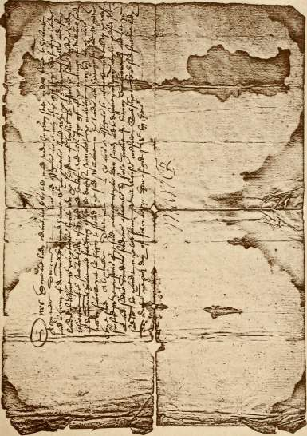
a^
£ I
3 = 5
-r "J
2; j3 c
3 I
could procure any mitigation of her captivity. Sir William Douglas, the
Laird of Loch Leven, discharged with severe fidelity the task of Mary's
jailor, but his younger brother, George Douglas, overcome by the Queen's
distress and perhaps also by her beauty, laid a plot for her deliverance.
The plot was discovered and he was expelled from the island in consequence, 5 ale tf^? ,. r ...... ©ranofatber bj>
but he kept up a correspondence with a kinsman, William Douglas, called Sir inn. Scott.
Little Douglas, who had relations in the Castle. On Sunday, the 2nd May,
1568, this William contrived to steal the keys of the Castle while the family
were at supper, and let Mary and her attendant out of the Tower when all
had gone to rest. He then locked the gates of the Castle to prevent
pursuit, placed the Queen and her waiting-maid in a little skiff and rowed
to the shore, throwing the keys of the Castle into the lake in the course of
their passage. Lord Seton and a party of his adherents were waiting at
the landing place with horses, and the Queen instantly mounted and hurried
off to Niddrie Castle in Mid-Lothian, whence she proceeded next day to
Hamilton.
In the narration of this romantic story in " The Abbot," history and tradition are somewhat confused, and the success of the escape is conferred on George Douglas, while the merit of it belongs, in reality, to the boy called William, or Little Douglas, either from his youth or his slight stature. In the novel, the part of this Little Douglas has been assigned to Roland Graeme.
The news of Mary's escape flew like lightning throughout the country and spread enthusiasm everywhere. The people remembered her gentleness, grace and beauty, and if they reflected on her errors they no doubt thought she had been punished for them with great severity. On Sunday, Mary was a sad and helpless captive in the lonely Tower of Loch Leven; on the Saturday following she was at the head of a powerful confederacy by which nine Earls, nine Bishops, eighteen Barons and many gentlemen of rank engaged to defend her person and restore her to power. Buckingham, in his memoirs of Mary Stuart, says, " No sooner had the captive lady escaped from her prison and raised the banner of loyalty in that secluded part of her kingdom than a band of the brightest and ablest spirits of the nation flocked joyously to her standard, and a Bond of Association was raised in her favour and signed by nearly 150 of the members of Nobility, Clergy and Gentry." It is somewhat curious, having regard to the part played by the dBarg Stuart, family in the only too recent murder of Rizzio, to find the • Tweedies now jg^ vo ?j p'233 concerned on Mary's behalf in this rising; but amongst the Barons is recorded Tweedie of Drummelzier, who was actually one of the signatories to this Bond, which was dated 8th May, 1568, for the defence of the Queen of Scots. It is perhaps not uninteresting to quote from Sir Walter Scott's description of the morning after, Mary's escape, when, describing her feelings
TKflaverlcv. IRovels Cbe abbot cbap. siivl.
B.D. 1570.
IR.p.C. vol. jlv. p. 75.
H.D. 1572. •R.p.G. vol. II.
3Soro' IRecoros of Peebles.
Peebles JBurgb "Recoros.
on awakening, he puts words into her mouth which call the scene vividly before our eyes :—
" ' Rise, rise, Catherine,' cried the enraptured Princess, ' arise and come hither !—here are swords and spears in true hands and glittering armour on loyal breasts. Here are banners, my girl, floating in the wind as lightly as summer clouds. Great God ! what pleasure to my weary eyes to trace their devices—thine own brave father's—the princely Hamilton's—the faithful Fleming's—See! see ! they have caught a glimpse of me, and throng towards the window.' "
The account of the battle that followed is as melancholy as the foregoing gathering was enthusiastic. On the 13th May, 1568, the Regent, Murray, occupied the village of Langside, which lay full in the march of the Queen's army, and after a most obstinate encounter, the battle was eventually decided against the Queen, who beheld the final and fatal defeat of her forces from the Castle called Cruikstain, from whence she fled to Galloway, and eventually reaching England, surrendered herself to the mercy of Elizabeth, and to an imprisonment which only ended with her death in Fotheringay Castle.
On the 13th September, 1570, the reign being given as that of James VI. in the Public Records, thus marking the fact that the authorities had accepted Mary's flight from Scotland as her abdication, we find an entry stating that James Cockburn of Skraling, William Tweedie of Drum-melzier, and Adam Tweedie of Drava were called upon to make good their Bond given in security of certain persons who did not come forward to answer the charges laid against them ; and on 27th June, 1572, we find amongst the index of names excluded from the text that of Adam Tweedie of Drava, who had been cited, but for what purpose we do not know.
In the Records of the Burgh of Peebles we find on the 31st March, 1572, the names of James Tweedie and Thomas Tweedie as Quartermasters of the Watch, and on the 19th May, in the same year, in the Burgh Record of the " vesying of the wappynnis," are mentioned "James Tweedie armit, Gilbert Tweedie armit, Thomas Tweedie armit, and James Tweedie armit," James Tweedie, Gilbert Tweedie and Thomas Tweedie all being again mentioned in the Burgh Records under dates the 28th May, 1572, and the 19th June, 1572, as Members of the Council of the Burgh.
From some cause unknown, a bad feeling had grown up in the town of Peebles against John Dickyson of Winkstoun, the Provost of the Burgh, and he was at length barbarously murdered on the 5th July, 1572. Of this even the records take no notice except in a casual way, but on the day following the murder, William Dickyson of Winkstoun and his kinsmen promised to live peaceably in time to come, and the baillies and community in like manner undertake not to molest him or his friends ; but though only incidentally referred to at this time and elsewhere in the records, the fact of
the slaughter is undoubted, for it was the subject of a judicial enquiry. On Pttcalrn's
& ••it Criminal trials
the 19th July in the same year James Tweedie, John Wychtman, Martin Hay vol. t. p.31.
and John Bullo, all of Peebles, and Thomas Johnstone, were tried in the
High Court of Justiciary for the " cruel slaughter of the late John Dickisone
of Wynkstone," but the assize acquitted them with only one dissentient.
According to tradition which lingered in the town till within very recent
years, the murder was committed in the High Street near Deane Gutter.
From the following we learn that the Tweedies did not disdain to
act the part of freebooters when occasion offered. On the 13th September,
1572, complaint was made to the Privy Council at Stirling by
Duncan Weir of Staneburne, that William Tweedie, with Roger his 1R.jP-C.vol.lt.
. . . V-164.
brother, his sons Symon Tweedie and Adam Tweedie, John Tweedie the
tutor of Drummelzier, and others, had assaulted the House of Staneburne
and raided it of cattle, horses and various articles, amongst which were
two Jeddart staves, a species of battle-axe or partisan called after the
town of Jedburgh, the citizens of that town being distinguished for the
use of that particular weapon. William Tweedie alleged that he had
obtained a gift of what he had taken away, and, therefore, had done no
wrong to Duncan Weir. The Regent and Council referred the matter to
the Lords of the Cession " to do justice therein according to the Laws of
the Realm," and we hear nothing whatever as to whether Duncan Weir
ever obtained his rights or not, or even whether he had any.
On the 15th December, 1573, Sir Walter Scott of Branxholme and H.D. 1573. John Tweedie, the tutor of Drummelzier, entered into recognisances that J?'?,'?* v ° l * M * Margaret Turnbull, the widow of David Elliot, and Walter Scott her son, should answer for certain things laid to their charge, and should not molest Gawin, or Jean Scott, his wife.
According to an entry in the Register of the Great Seal made at ir.<s.s. 1546—80 Holyrood House on the 8th February, 1573, it would appear that one p John Tweedie, of what place is not mentioned, had a wife whose maiden name had been Dunsyre; and that shortly afterwards James Brown of Logan made complaint to the Lord Regent and the Lords of the Secret Council in regard to the securityship for the entry of Walter Henderson, servant to William Tweedie of Wrae, and letters were ordained to be •R.p.c. vol. II. directed charging Patrick Tweedie of Drummelzier to appear.
In the same year John Tweedie of Drummelzier is mentioned in the Acts Hcts Scots.
of the Parliament of Scotland as Commissioner for Musters in Peeblesshire. vol. III. p. 92.
The feud with the Geddes family seems still to have been pursued, Chambers' r 1 1 », „,.„. „ .,,. r t , peeblcssblce
tor on the 11th March, 1574, Wuliam Baulie ot Lamyngton became p , \oe.
surety for George and James Geddes, that they should not give annoyance "*■<*• vo1 * "•
to John Tweedie, tutor of Drummelzier, Patrick Tweedie his uncle,
Adam Tweedie of Drava, James Tweedie of Fruid, and others.
S.D. 1574. IRcci. privs Council vol. ti. Chambers' pccblessbfre p. 105.
H.D. 1579. 1R.<S.S. 1546-SO p. 780.
TR.p.C. vol. lit. p. 240.
acts scot.
parliament vol. lii. p. 122, dBems. Scot, parliament bg ffoster p. 344. a.©. 1580. 1R.©.S. 1546-80 p. 827.
1R.(B.S. vol. v. flo. 383.
1R.0.5. vol. vl.
p. lie.
On the 6th December, 1574, Thomas Cant of Sanct Gillegrange becomes surety for Adam Tweedie of Drava, that he shall appear before the Lord Regent and the Lords of Secret Council in February that is next to come, and abide by such orders as shall be made for the quietness of the country, and also that he, his kin, brothers, servants and friends, and all others with whom he may have anything to do, shall in no way invade or pursue Charles Geddes of Rachan, and James Geddes his father, his brother, his kin and others, except by regular process of law, under bond of ,£2,000, and Adam Tweedie binds himself to relieve Thomas Cant of the bond. This surety by Thomas Cant must either have been insufficient or withdrawn, for on the following day, the 7th December, William Lauder of Halton undertakes the same obligation concerning Tweedie and his relations, while at the same time James Tweedie of Frude, John Tweedie of Drummelzier, and Patrick his uncle, all had to enter into sureties for good behaviour, no doubt, in connection with these disturbances.
A Tweedie is mentioned in the Register of the Great Seal under date, 16th February, 1579, in regard to a certain Charter confirmed by the King in favour of John Hamilton of Stanehous.
In 1579 John Tweedie, the tutor of Drummelzier, seems to have been at daggers-drawn with Sir Alexander Jardine of Apilgirth, for he lodges a complaint against him in that Sir Alexander had forcibly entered in his lands and seized the rents ; and for once in a way, Tweedie appears to have been in the right, for he boldly appeared before the Privy Council and proved his case. Sir Alexander Jardine not having appeared, he was denounced a rebel and put to the horn with its attendant consequences.
We find that Gilbert Tweedie is mentioned as being in Parliament as the Member and Commissioner for Peebles in the year 1579.
John Tweedie, the tutor ol Drummelzier, appears among the names of assize on the Register of the Great Seal for the year 1580 at Edinburgh on the 13th May.
Under the old ecclesiastical system, Dawick was a vicarage dependent on Stobo, but after the Reformation it became an independent parish. The church lands, there under reservation of a glebe, were feued out, and under a Charter granted on the 15th June, 1580, by Robert Douglas, designed as Parish Vicar of Stobo, with consent of the Archbishop, Dean, and Chapter of Glasgow, in favour of John Tweedie, the tutor of Drummelzier, the feu duty payable was fixed at five merkes yearly ; and the grant was confirmed by a Crown Charter dated the 20th March, 1581-2.
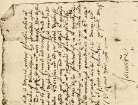
■ ■■ "r» >-
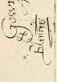